1.基础概念
1.1 同步、异步
x同步和异步通常 形容一次方法的调用。同步方法，方法的调用者必须等待同步方法执行完毕以后，再进行后续行为。异步方法，方法的调用者不必等待异步方法执行完毕，可以直接进行后续行为。调用异步方法后，这个异步方法会在另一个线程执行。有时，这个线程是另外的cpu核心负责执行的，所以合理使用异步方法可以充分发挥cpu多核性能。
1.2 并发、并行
xxxxxxxxxx并发指 一段时间内，多个任务交替执行。但是他们仍然是串行的。并行指 同一时刻，真正的有多个任务同时执行。
1.3 临界区
xxxxxxxxxx临界区表示 多个线程使用的 公共资源、共享数据。
xxxxxxxxxx临界区内的资源是 并行设计中重要关注的。因为这可能会产生严重的数据不一致问题。解决数据不一致问题可行的方法之一 ：在同一时刻只允许1个线程使用临界区资源。这样会导致在临界区内。并行 变成了串行。一定程度上牺牲了性能。
1.4 阻塞、非阻塞
blocking 阻塞
non-blocking 非阻塞
阻塞 和 非阻塞 通常形容 线程之间的相互影响 ， 例如：
xxxxxxxxxx一个线程占用了临界区、其他希望得到临界区的【线程只能挂起等待】。此时就是【阻塞】。如果所有线程都不会对临界区资源进行修改，那么【同时允许】多个线程进入临界区也是【线程安全】的，此时对于进入临界区的所有线程都不需要【等待】，畅通无阻的继续执行下去，表现出的就是【非阻塞】
1.5 死锁 、饥饿、活锁
xxxxxxxxxx一个线程长时间得不到需要的临界区资源，导致线程无法进行下去。 --饥饿现象
xxxxxxxxxx死锁： 形成的循环等待。所有线程都在等待临界区资源，形成了一个闭环。没有任何一个线程能执行完毕。线程会无限等待下去，永远无法正常执行完毕。A线程拥有A'，还想拥有B' ，此时B'被B线程使用。同时B线程也想有用A'资源。两个线程都在等待对方释放资源。
xxxxxxxxxx活锁比较有趣。解决死锁的办法之一，就是结的某1个线程，并释放它所拥有的临界区资源。这样其他线程会逐步执行完毕，释放资源。 最终、被结束掉的线程再尝试重新运行。此时因为其他线程已经执行完毕释放了资源，所以自己也能正常执行完毕。所以根据以上思路可以设计线程：线程开始->获取临界区资源->获取超时->释放资源->尝试休眠等待->再次尝试获取临界区资源->如果获取成功正常执行，否则再次释放资源等待。如此设计：死锁闭环的线程会尝试自动解除。但是有时会出现这样的尴尬现象：A B 线程各自拥有 A' B' ， 同时希望获得对方的B' A' 。A B在获取到一半资源以后，都获取超时了。都主动释放资源。都处于休眠等待中，没有任何一方尝试获取A' B'如此反复、最终明明是‘活’的状态却没有任何一方成功执行完毕。想来活锁解决比较容易、不同线程之间的获取超时、休眠等待时间不应当完全一样。这样就可以错开尴尬的活锁。
1.6 并发级别
xxxxxxxxxx由于临界区的存在，多线程之间并发，必须受到控制。 可分为如下并发级别：阻塞 //sync无饥饿 //公平锁无障碍 //乐观锁无锁无等待
1.6.1 阻塞
xxxxxxxxxx被阻塞的线程，在其他线程释放资源前，无法继续执行。
xxxxxxxxxxsynchronized 、 重入锁 都尝试在执行后续代码前，先获取临界区的锁。如果得不到线程机会挂起等待。 此时线程就是被阻塞状态
1.6.2 无饥饿
Starvation-Free
xxxxxxxxxx笼统的讲就是使用 公平锁。使用公平锁，高优先级线程和低优先级线程获得锁的概率是相等的。避免了饥饿现象。所以称为 无饥饿
1.6.3 无障碍
xxxxxxxxxx通俗的讲就是 乐观锁CAS机制的思想。
1.6.4 无锁
1.6.5 无等待
1.7 原子性 有序性 可见性
1.7.3 可见性
xxxxxxxxxx一个线程修改了临界区内变量的值，另一个线程能够立刻知道这次修改，并成功读取出最新的值
xxxxxxxxxx可见性依赖于 缓存行失效技术。优化: 缓存填充。一个变量占1个缓存行。避免缓存行失效时，影响其他缓存变量。参考 https://blog.csdn.net/qq_27428109/article/details/74781774
1.7.3.1 Cache的写策略
xxxxxxxxxx1.write through只要cpu修改了cache,就立即把cache中最新的数据刷新到内存中
xxxxxxxxxx2.write backcup修改了cache中的数据，直到因为某种原因，这条cacheline从chace中移出时，刷新回主存中
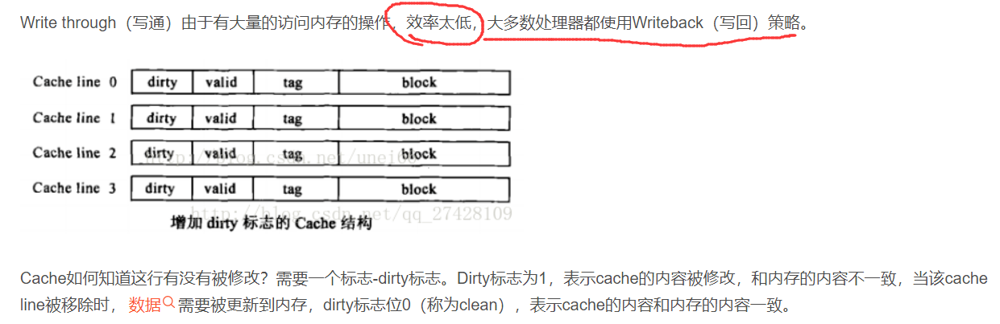
1.7.3.2 Cache不一致问题
缓存不一致问题，其实就是数据不一致问题的微观表现。多核cpu通常会有多级缓存，L1级别的缓存通常是各个核心独享的。这样会导致不一致问题：
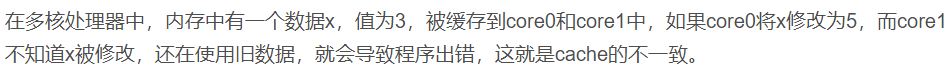
1.7.3.3 如何保证cache一致性？
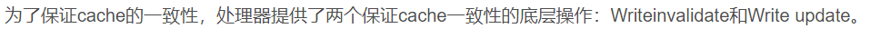
xxxxxxxxxxWrite invalidate（置无效）：当一个内核修改了一份数据，其他内核上如果有这份数据的复制，就置成无效。
xxxxxxxxxxWrite update（写更新）：当一个内核修改了一份数据，其他地方如果有这份数据的复制，就都更新到最新值。
1.7.3.4 缓存行填充
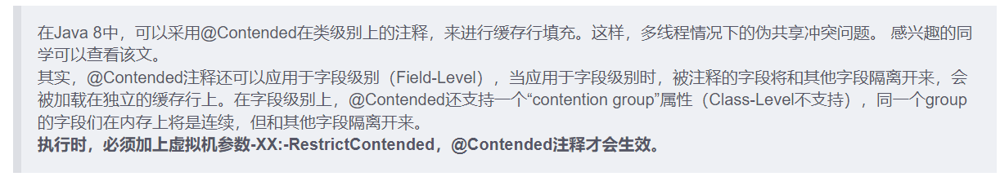
1.8 指令重排
1.8.1 概念
1.8.2 哪些指令不能重排
xxxxxxxxxx程序顺序原则： 一个线程内保证语义的串行性。volatile 原则： volatile 变量的写先于读发生。保证了volatile的可见性锁规则： 解锁必然发生在 随后的加锁前。传递性： A先于B，B先于C, 那么A先于C线程的start() 优先于其他每一个动作。
1.9 补充
1.9.1 volatile
java 提供了一种稍弱的同步机制，volatile 关键字。 用于确保变量的更新操作会通知到其他的所有线程。
xxxxxxxxxx当变量被 volatile修饰以后，编译器不会将该变量的操作进行指令重排。同时volatile变量也不会被缓存到寄存器或者其他cpu不可见的地方。因此读取volatile变量时，总是当前时刻的最新值。
2. 并行世界基础
2.1 java中线程的状态
xxxxxxxxxxpublic enum State{NEW,RUNNABLE,BLOCKED,WAITING,TIME_WAITING,TERMiNATED}
2.2 java中线程的API
2.2.1 新建线程
可以通过 new关键字创建一个新线程。
线程的构造方法有多个，如下图：

有关Thread的构造方法，及其他的相关信息 Thread
示例：
xxxxxxxxxx public static void main(String[] args) { Thread t1 = new Thread(() -> { Thread currentThread = Thread.currentThread(); String name = currentThread.getName(); System.out.println(name + " is running"); },"t1"); t1.start(); }
2.2.2 终止线程
xxxxxxxxxx不要使用Thead.stop()方法。会强制停止线程，可能会导致严重的数据不一致问题。
xxxxxxxxxx//可以自己设置 停止flag，在合适的时机退出线程：static class myThread extends Thread{ private boolean flag = false;
public void StopMe(){ flag = true; }
public void run() { while (true){ if (flag){ System.out.println("t2 is stop"); break; } Thread currentThread = Thread.currentThread(); String name = currentThread.getName(); try { System.out.println(name + " is doing something ...1"); Thread.sleep(500); System.out.println(name + " is doing something ...2"); Thread.sleep(500); System.out.println(name + " is doing something ...3"); Thread.sleep(500); } catch (InterruptedException e) { e.printStackTrace(); } System.out.println("It's safe point now!"); } }
}
public void test() throws InterruptedException { myThread t2 = new myThread(); t2.setName("t2"); t2.start(); Thread.sleep(5000); System.out.println("Main Thread notice t2 to stop!"); t2.StopMe(); t2.join();
}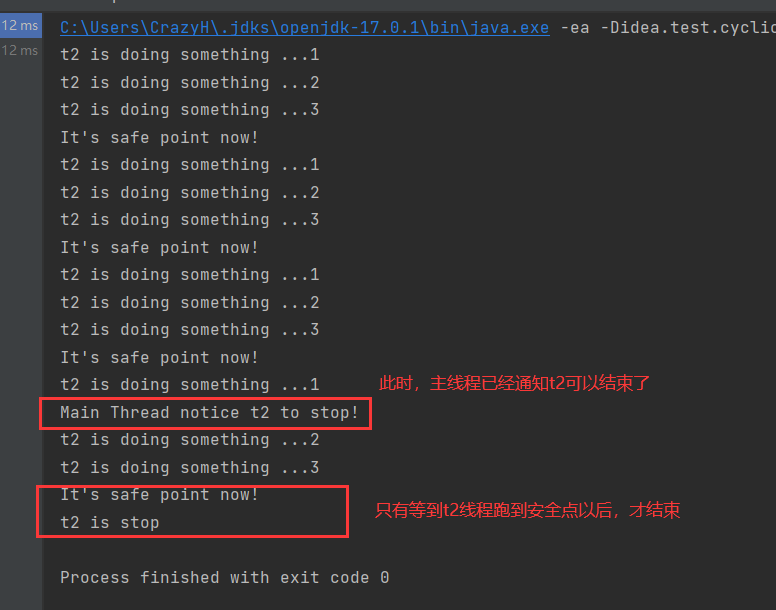
2.2.3 线程中断
xxxxxxxxxx线程中断的思路 和上文我们定义的 stopMe()是一致的。通过设置 interrupt 标识，通知线程可以中断了。但何时为安全点，何时中断由程序员决定。
2.2.3.1 例1
xxxxxxxxxx下面是一个简单用例。不使用 Thread.sleep()方式 来减少输出“do something”语句。因为 当线程休眠时打断线程，会抛出InterruptedException异常。
xxxxxxxxxx public void test2() throws InterruptedException { myThread2 t3 = new myThread2(); t3.setName("t3"); t3.start(); Thread.sleep(5000); System.out.println("Main Thread notice t3 to stop!"); t3.interrupt(); t3.join();
}
static class myThread2 extends Thread{ int t = 0; int safePoint = 0; public void run() { while (true){ Thread currentThread = Thread.currentThread(); t++; if (t%400000000==0){ //减少线程输出的次数 t = 0; System.out.println("doing something"); safePoint++; if (safePoint %2==0){//每2次一个安全点 System.out.println("it's safe point now!"); if (currentThread.isInterrupted()){ System.out.println("stop Thread when safe point"); break; } } } } } }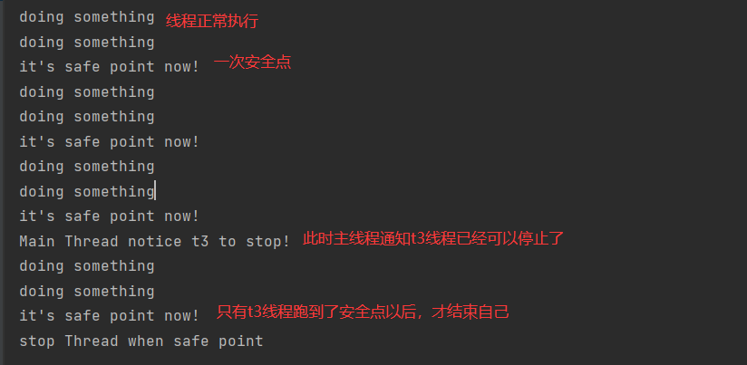
2.2.3.2 例2
xxxxxxxxxx尝试线程在休眠的时候，被打断。 抛出InterruptedException时，interrupt 标识不会被置true、所以需要在捕捉时手动 设置true，以便于下次安全点检查标志位。
xxxxxxxxxxstatic class myThread3 extends Thread{ public void run() { while (true){ if (isInterrupted()){ System.out.println("在安全点退出"); break; } try { Thread.sleep(50000); } catch (InterruptedException e) { e.printStackTrace(); System.out.println("在休眠的时候被 interrupt了"); try { Thread.sleep(2000); System.out.println("继续处理工作..."); Thread.sleep(2000); System.out.println("等到下一个安全点..."); } catch (InterruptedException interruptedException) { interruptedException.printStackTrace(); } interrupt(); } } }}
public void test3() throws InterruptedException { myThread3 t4 = new myThread3(); t4.start(); Thread.sleep(2000); System.out.println("通知t4可以停止了"); t4.interrupt(); t4.join();}2.2.4 等待wait() 和 通知 notify()
2.2.4.1 他们是Object类中的方法
xxxxxxxxxxwait()notify()被用于线程之间协作。但他们是Object类里的final方法。这意味着，任何一个对象都具有这两个方法。
xxxxxxxxxx在一个线程中调用 obj.wait() 意味着这个线程将在这个对象上等待。直到另一个线程调用了obj.notify()，并且释放了obj的监视器以后，当前线程才有可能会被唤醒(当有多个线程在同一个obj上等待时，随机唤醒1个)显然此时 obj对象成为了多线程通信的手段。
2.2.4.2 使用前必须获取这个对象的监视器
xxxxxxxxxx使用 wait() 或者 notify() 方法时，必须包含在 synchronized代码块中，也就是说，调用这两个方法前，必须先获得这个对象的监视器。以及调用wait()方法以后，将会立即释放这个对象的监视器。但是 notify()方法并不会理解释放这个对象的监视器。
示意图：
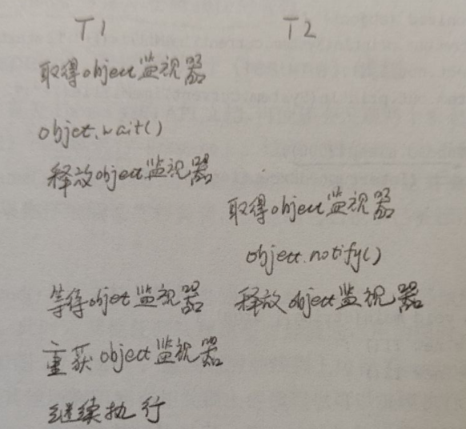
2.2.4.3 一个简单的用例
xxxxxxxxxxpublic class Main2 { static Object o = new Object(); public static void main(String[] args) throws InterruptedException { myThread4 myThread4 = new myThread4(); myThread4.start(); Thread.sleep(30);//让 myThread5 后启动 myThread5 myThread5 = new myThread5(); myThread5.start(); myThread4.join(); myThread5.join(); }
static class myThread4 extends Thread{ public void run() {
synchronized (o){ System.out.println(System.currentTimeMillis() + " 获得了 o 的监视器"); System.out.println(System.currentTimeMillis() +" T1 休眠5秒,此时开启T2 ，因为无法获得o的监视器,T2 不会notify"); try { Thread.sleep(5000); System.out.println(System.currentTimeMillis() +" 休眠5秒结束,尝试调用 o.wait()"); } catch (InterruptedException e) { e.printStackTrace(); } System.out.println(System.currentTimeMillis() +" 释放o的监视器,此时T2 才会执行"); try { o.wait(); } catch (InterruptedException e) { e.printStackTrace(); } System.out.println(System.currentTimeMillis() + " T1 执行完毕"); }
} }
static class myThread5 extends Thread{
public void run() {
synchronized (o){ System.out.println(System.currentTimeMillis() +" T2 获取了 o 的监视器"); System.out.println(System.currentTimeMillis() +" T2 尝试睡眠 2秒,sleep不会释放锁，所以此时T1并不会被唤醒"); try { Thread.sleep(2000); } catch (InterruptedException e) { e.printStackTrace(); } System.out.println(System.currentTimeMillis() +" 此时 尝试调用 o.notify，释放监视器。T1被唤醒"); o.notify(); System.out.println("notify 不会立即释放锁，等到sync代码块执行完毕后才释放锁。"); System.out.println("如果此时T2 进入死循环，T1永远也不会被唤醒"); while (true){ } // try {// System.out.println(getTime() +" T2 尝试睡眠2秒，模拟处理事务消耗2秒");// Thread.sleep(2000);// } catch (InterruptedException e) {// e.printStackTrace();// }// System.out.println(getTime() +" 至此,T2 的sync代码块执行完毕,才释放o的监视器,T1 才会被唤醒"); } } }}
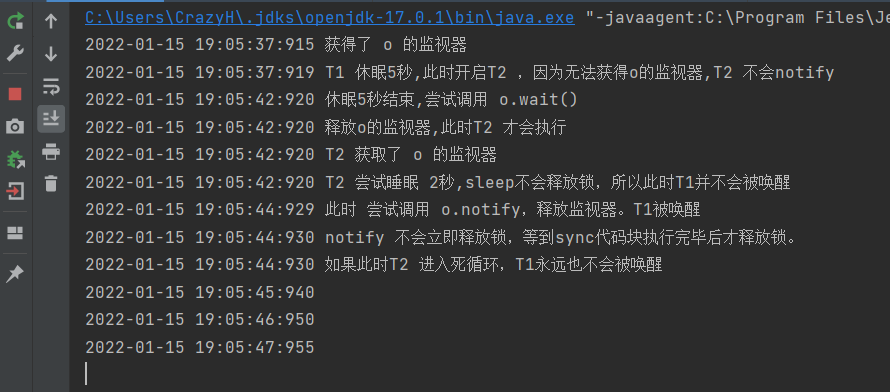
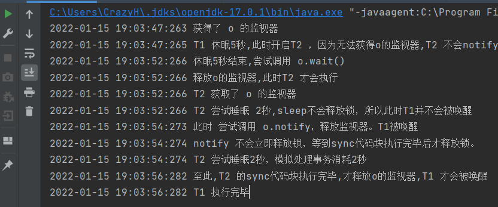
2.2.4.4 细致分析一下
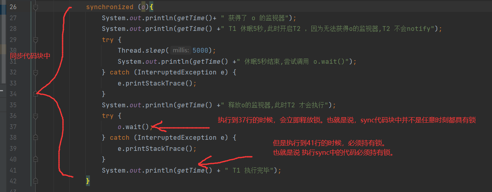
2.2.4.5 总结一下
xxxxxxxxxxwait 、notify 都属于Object类wait 、notify 使用前都需要先获取 这个对象的监视器。//包含在sync中wait 会立即释放这个对象的监视器。notify 不会立即释放这个对象的监视器。只有等sync代码块执行完毕，才会唤醒等待在这个对象上的其他线程。notify 唤醒线程是随机的。
2.2.5 等待线程结束 join 和 让步 yield
xxxxxxxxxx当一个线程A的输入，依赖于另一个线程B的输出。此时 A需要等待B线程执行完毕，才能继续执行。JDK提供了 Thread.join()来完成如上动作。
2.2.5.1 join()方法
Thread 中join有3个重载方法。
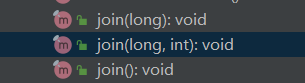
xxxxxxxxxxjoin()方法会无限阻塞调用者线程，直到该方法执行完毕。、其余的2个给出了最大等待时间。
2.2.5.2 yield()方法
xxxxxxxxxx会让当前线程让出cpu，但不会释放锁。当程序员觉得某个线程优先级比较低。除了可以设置低优先级以外。还可以主动调用 yield()方法，尝试把cpu的使用权让给其他线程。注意：让出cpu以后，这个线程仍然处于 就绪态(操作系统里的就绪态)，它可能会被再次分配cpu时间片。
2.2.5.3 join()不会释放锁
xxxxxxxxxxjoin()方法不会释放锁。
xxxxxxxxxxpublic class Main3 { static Object lock = new Object(); public static void main(String[] args) throws InterruptedException { myThread5 a = new myThread5(); a.setName("A"); myThread6 b = new myThread6(); b.setA(a); a.setB(b);
a.start(); Thread.sleep(5);// b.start();
a.join(); b.join();
}
static class myThread5 extends Thread{
private Thread B;
public void setB(Thread b) { B = b; }
public void run() { synchronized (lock){ System.out.println(getTime() + " A获取了锁"); try { System.out.println(getTime() + " A睡眠1秒,让B线程启动"); Thread.sleep(1000); } catch (InterruptedException e) { e.printStackTrace(); } System.out.println(getTime() + " A调用 B.join() 、join()不会释放锁.B线程永远执行不下去。A线程也永远执行不下去"); try { B.join(); } catch (InterruptedException e) { e.printStackTrace(); } System.out.println(getTime()+ " 调用后睡眠5秒"); try { Thread.sleep(5000); } catch (InterruptedException e) { e.printStackTrace(); } System.out.println(getTime()+ " A执行完毕"); } } }
static class myThread6 extends Thread{ private Thread A;
public void setA(Thread a) { A = a; }
public void run() { System.out.println(getTime() + " B线程启动"); synchronized (lock){ System.out.println(getTime() + " B获得了锁"); System.out.println(getTime() + " B尝试睡眠1秒"); try { Thread.sleep(1000); } catch (InterruptedException e) { e.printStackTrace(); } System.out.println(getTime() + " B线程结束"); } } }}
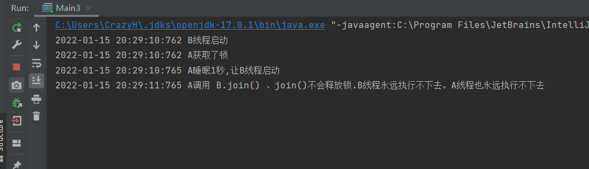
2.2.5.4 yield()不会释放锁
一个小demo测试了线程A即使yield()以后，也不会释放锁lock给线程B
xxxxxxxxxx/** * * 主要测试 join 和 yield */public class Main3 { static Object lock = new Object(); public static void main(String[] args) throws InterruptedException { myThread5 a = new myThread5(); a.setName("A"); myThread6 b = new myThread6(); b.setA(a); a.setB(b);
a.start(); Thread.sleep(5);// b.start();
a.join(); b.join();
}
static class myThread5 extends Thread{
private Thread B;
public void setB(Thread b) { B = b; }
public void run() { synchronized (lock){ System.out.println(getTime() + " A获取了锁"); try { System.out.println(getTime() + " A睡眠1秒,让B线程启动"); Thread.sleep(1000); } catch (InterruptedException e) { e.printStackTrace(); } System.out.println(getTime() + " A调用yield,此时lock仍然不会释放,B线程仍不会执行sync里的代码"); Thread.yield(); System.out.println(getTime()+ " 调用后睡眠5秒"); try { Thread.sleep(5000); } catch (InterruptedException e) { e.printStackTrace(); } System.out.println(getTime()+ " A执行完毕"); } } }
static class myThread6 extends Thread{ private Thread A;
public void setA(Thread a) { A = a; }
public void run() { System.out.println(getTime() + " B线程启动"); synchronized (lock){ System.out.println(getTime() + " B获得了锁"); System.out.println(getTime() + " B尝试睡眠1秒"); try { Thread.sleep(1000); } catch (InterruptedException e) { e.printStackTrace(); } System.out.println(getTime() + " B线程结束"); } } }}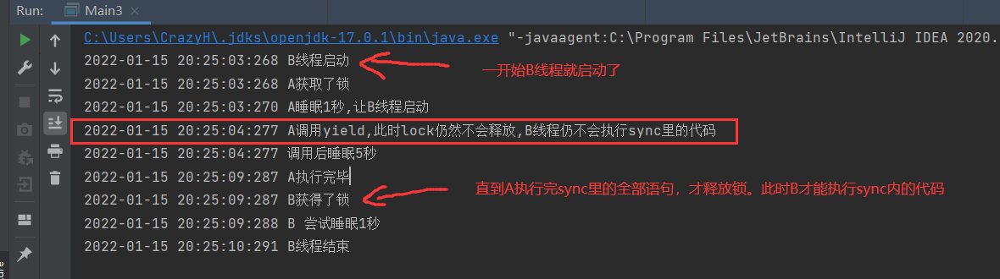
2.3 线程组
xxxxxxxxxx如果线程的数量较多，同时功能分配又比较明确。可以尝试将多个线程放置在用一个 【线程组】中统一管理。
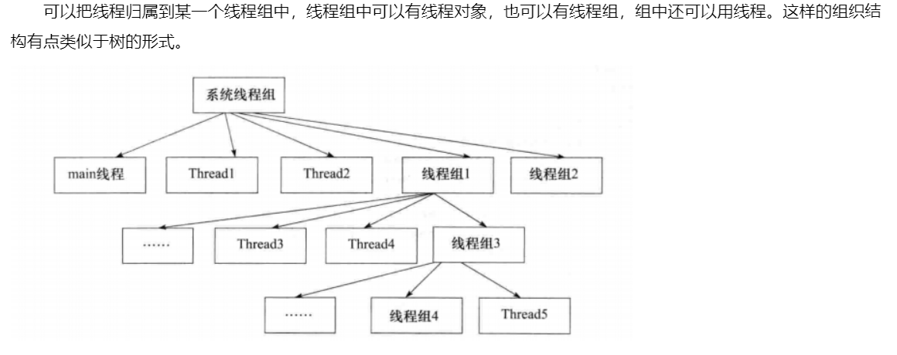
2.3.1 ThreadGroup构造参数
ThreadGroup的无参构造方法是私有的。是被C代码调用，创建一个系统线程组。
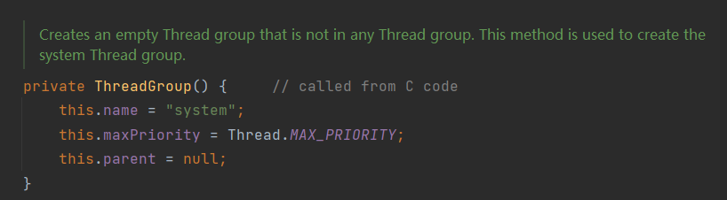
public 修饰，供程序员调用的Api是这两个构造方法。
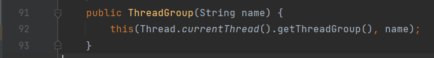
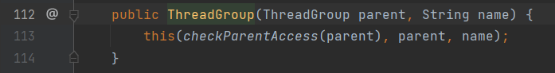
2.3.2 线程组的简单用例
xxxxxxxxxx/** * * 测试线程组 */public class Main4 { public static void main(String[] args) { ThreadGroup tg = new ThreadGroup("myThreadGroup"); Thread t1 = new Thread(tg,()-> System.out.println(1),"t1"); Thread t2 = new Thread(tg,()-> System.out.println(1),"t2"); Thread t3 = new Thread(tg,()-> System.out.println(1),"t3"); Thread t4 = new Thread(tg,()-> System.out.println(1),"t4");
}}2.4 守护线程
xxxxxxxxxxThread.setDaemon(boolean on);
xxxxxxxxxx与守护线程相对应的就是用户线程。常见的守护线程： 垃圾回收线程、JIT线程当java应用内只有守护线程，虚拟机就会退出。
xxxxxxxxxxsetDaemon() 必须在start()之前
2.5 线程优先级
xxxxxxxxxx1-10级。 默认是5数字越大，优先级越高。越有可能被cpu调度执行。
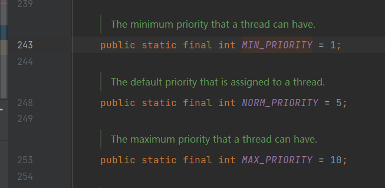
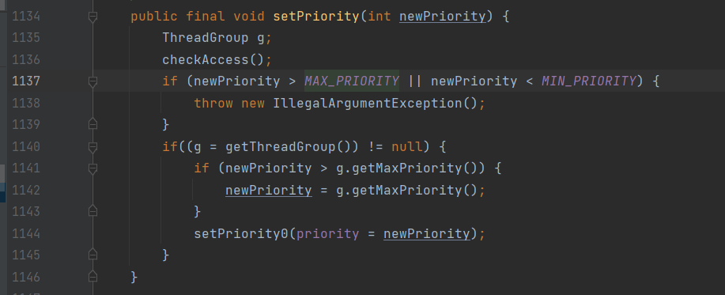
2.6 synchronized 锁
xxxxxxxxxxsynchronized 关键字专门用于 同步代码。被sync包裹的代码块，常称为 同步代码块。synchronized 也称为“内置锁” ，它是一个可重入锁，
2.6.1 sync 可以修饰多个地方
修饰 实例对象 //对 对象加锁。获取这个对象的监视器
修饰 类 //对 Class对象加锁
修饰 静态方法 //对 Class对象加锁
修饰 实例方法 //对 this对象加锁。也就是调用这个实例方法的实例对象
xxxxxxxxxx修饰类：在JMM中，堆空间中存放着Class类对象，作为方法区的入口对象。任何一个class都有对应的Class对象。当sync修饰类的时候，相当于对这个Class对象加锁。修饰静态方法:同修饰类一样。对Class对象加锁。在JMM中，我们认为静态方法已经不属于这个类的任何实例对象了。而是属于这个类本身。显然，修饰静态方法，是对Class对象加锁。
2.6.2 sync 可以保证 原子性 可见性
xxxxxxxxxxsynchronized 无疑会保证原子性。
xxxxxxxxxxsync也会保证可见性。synchronized关键字保证，在释放锁之前，把缓存内更新的变量值刷新到主存中。
3. JDK并发包
为了更好的编写并发程序，jdk提供了大量实用的api。
3.1 重入锁
java.util.concurrent.locks.ReentrantLock
3.1.1 简单的使用代码
xxxxxxxxxxpublic class Main1 extends Thread{ private static ReentrantLock rtLock = new ReentrantLock(); private static int times = 0; public static void main(String[] args) throws InterruptedException {
Main1 m1 = new Main1(); Main1 m2 = new Main1(); m1.start(); m2.start(); m1.join(); m2.join(); System.out.println(times); }
public void run() { for (int i = 0;i<50000;i++){ rtLock.lock(); try { times++; }finally { rtLock.unlock(); } } }}3.1.2 ReentrantLock 一些api
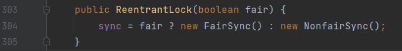
xxxxxxxxxx构造方法传入 boolean fair 参数，创建公平锁
xxxxxxxxxxisHeldByCurrentThread() //返回一个boolean 判断当前线程是否持有锁isFair()getOwner() //返回持有线程ThreadisLocked()hasQueuedThread(Thread t) //返回boolean。在锁等待队列里是否含有执行线程hasQueuedThreads() // 等待队列是否为空getQueueLength()//获得锁等待队列长度tryLock(long timeout ,TimeUnit unit)//在给定的时间内，获取锁。如果超时，返回false,成功获取返回true
3.1.3 重入锁的中断响应
xxxxxxxxxx通常线程在等待锁的过程，只有两种结果。1、得到锁继续执行。2、得不到锁 一直等待。重入锁的中断响应提供了第三种结果：线程在等待锁的过程中，可以根据需求取消对锁的请求。这有助于解决死锁
3.1.3.1 中断响应api
xxxxxxxxxxReentrantLock.lockInterruptibly() // 加中断锁。 被中断时会抛出 InterruptedException前文提到过。Thread.interrupt();方法通过设置标志位，来使程序打断。通知重入锁打断，也是使用Thread.interrupt()
3.1.3.2 简单使用实例
xxxxxxxxxxpublic class Main2 extends Thread{ private static ReentrantLock rt1 = new ReentrantLock(true); private static ReentrantLock rt2 = new ReentrantLock(true);
private int model = 1;//设置模式。 1模式先获取rt1，后获取rt2 //2模式反之 public Main2(int model,String name) { super(name); this.model = model; //通过构造方法设置model }
public static void main(String[] args) { Main2 m1 = new Main2(1,"m1"); Main2 m2 = new Main2(2,"m2"); m1.start(); m2.start(); Scanner scanner = new Scanner(System.in); if (scanner.hasNext()){ m2.interrupt();//给出打断信号 } }
public void run() { try { if (model ==1){ rt1.lockInterruptibly(); try { Thread.sleep(1000); } catch (InterruptedException e) { e.printStackTrace(); } rt2.lockInterruptibly(); }else if (model ==2){ rt2.lockInterruptibly(); try { Thread.sleep(1000); } catch (InterruptedException e) { e.printStackTrace(); } rt1.lockInterruptibly(); } } catch (InterruptedException e) { e.printStackTrace(); } finally { if (rt1.isHeldByCurrentThread()) { rt1.unlock(); System.out.println(getName() +" has rt1"); } if (rt2.isHeldByCurrentThread()){ rt2.unlock(); System.out.println(getName() +" has rt2"); } } }}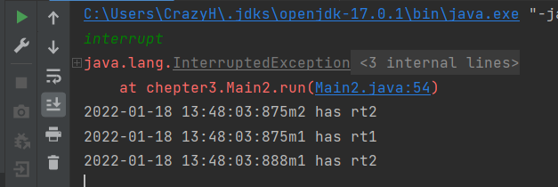
xxxxxxxxxxm2 线程被打断了、最终只持有rt2锁m1 线程同时持有2把锁
3.1.4 限时获取锁 tryLock
重入锁可以给 获取锁的请求加一个限定的时间，如果超时，则不再尝试获取锁。
获取成功返回true,否则返回false
xxxxxxxxxxtryLock() //不做任何等待，如果获取成功直接返回ture否则falsetryLock(long timeout, TimeUnit unit);
3.1.4.1 一个简单使用实例
xxxxxxxxxxpublic class Main3 extends Thread {
static private ReentrantLock rt1 = new ReentrantLock(); static private ReentrantLock rt2 = new ReentrantLock();
int model;
public static void main(String[] args) throws InterruptedException { Main3 t1 = new Main3(1, "t1"); Main3 t2 = new Main3(2, "t2"); t1.start(); t2.start(); t1.join(); t2.join(); }
public Main3(int model,String name) { super(name); this.model = model; }
public void run() { while (true) { try { if (model == 1) { if (rt1.tryLock() ){ Thread.sleep(2000); if (rt2.tryLock()) { Thread.sleep(1000); System.out.println(getName() + " done!"); break; } }
} else if (model == 2) { if (rt2.tryLock()){ Thread.sleep(2000); if (rt1.tryLock()) { Thread.sleep(1000); System.out.println(getName() + " done!"); break; } } } }catch (InterruptedException e){ e.printStackTrace(); } finally { if (rt1.isHeldByCurrentThread()){ rt1.unlock(); System.out.println(getName() + " 释放rt1"); try { Thread.sleep(new Random(System.currentTimeMillis()).nextLong(100)); } catch (InterruptedException e) { e.printStackTrace(); } } if (rt2.isHeldByCurrentThread()){ rt2.unlock(); System.out.println(getName() + " 释放rt2"); try { Thread.sleep(new Random(System.currentTimeMillis()).nextLong(100));//释放锁后随即睡眠，让其他线程尝试获取锁。防止活锁现象 } catch (InterruptedException e) { e.printStackTrace(); } } } } }}
3.1.5 公平锁、非公平锁
xxxxxxxxxx按照FIFO的规则，将锁平分给等待队列的线程。 即为 公平锁。反之，为 非公平锁。
xxxxxxxxxx通常，根据系统调度，一个线程会倾向于再次获得已经拥有的锁。这样省去了 频繁切换上下文带来的开销。因此： 非公平锁的吞吐率,效率会高于公平锁。但是可能会引发饥饿现象。
3.1.6 回顾与总结 重入锁特点
同一个线程可以再次获得 已经获得的重入锁。
通过 lock() 加锁
通过unlock()解锁
tryLock(long timeout, TimeUnit unit) 限时获取锁
lockInterruptibly() 中断响应锁
公平锁、非公平锁
3.2 Condition
3.2.1 什么是condition
condition 其实是一个接口。
Condition与锁搭配使用，可以让线程在合适的时间等待、或者在一个特定的时刻得到通知。
xxxxxxxxxx在Lock接口中，规定了一个名为 Condition newCondition()的方法。
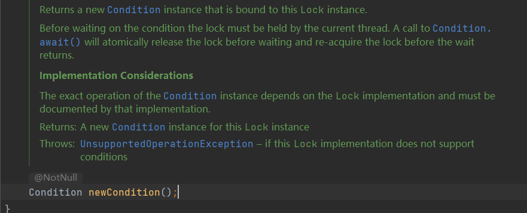
xxxxxxxxxx返回一个绑定在当前锁上的Condition实例
3.2.2 condition 接口方法
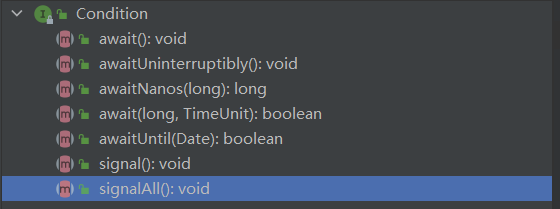
xxxxxxxxxxawait() 类似于 Object.wait(),让线程等待。并释放锁。awaitUninterruptibly(), 见名知意，线程等待，不响应中断await(long, TimeUnit) 限时等待signal() 类似于 Object.notify(),唤醒一个线程signalAll() 唤醒全部等待线程
3.2.3 测试一下api
xxxxxxxxxx在前文，曾经测试过。wait()会立即释放锁。notify()并不会立即释放锁唤醒其他线程。而是在退出sync代码块释放了锁以后，才会唤醒其他线程。现在测试一下Condition是否和Objeact.notify()一致
xxxxxxxxxxpublic class Main4 extends Thread{
static private ReentrantLock rt1 = new ReentrantLock(); static private Condition c1; static { c1 = rt1.newCondition(); } int model;
public static void main(String[] args) throws InterruptedException { Main4 t1 = new Main4(1, "t1"); Main4 t2 = new Main4(2, "t2"); t1.start(); Thread.sleep(10); t2.start(); t1.join(); t2.join();
}
public Main4(int model,String name) { super(name); this.model = model; }
public void run() { while (true){ try { if (model==1){ if (rt1.tryLock()) { System.out.println(getName()+ " 成功获取锁rt1"); try { Thread.sleep(50); c1.await();//在c1上等待 System.out.println(getName() + " 成功被唤醒!"); break; } catch (InterruptedException e) { e.printStackTrace(); } } }else if (model==2){ if (rt1.tryLock()) { System.out.println(getName()+ " 成功获取锁rt1"); try { Thread.sleep(200); System.out.println("尝试唤醒"); c1.signal();// System.out.println("然后执行死循环"); System.out.println("不执行死循环");// while (true){//// } break; } catch (InterruptedException e) { e.printStackTrace(); } } } }finally { if (rt1.isHeldByCurrentThread()) { rt1.unlock(); System.out.println(getName() + " 释放rt1"); } } } }}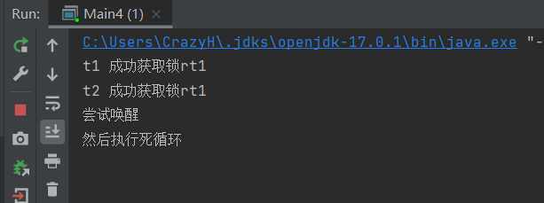
xxxxxxxxxx结果和notify() 一致。调用了singal()以后不会立即释放锁。只有显式调用了unlock()释放了锁以后，才会唤醒其他线程。
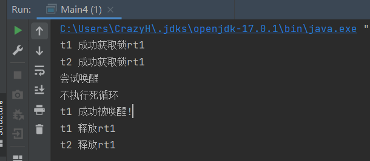
xxxxxxxxxxt2先释放锁，t1线程才能执行下去。此时输出语句不正确的原因是，释放锁和输出语句没有使用同步代码块。释放了锁以后恰好失去了cpu使用权。
3.3 信号量 Semaphore
xxxxxxxxxx信号量为 多线程协作 提供了更为强大的控制方法。可以说是锁的扩展。 synchronized 和 锁 只允许同1个资源同时被1个线程访问。信号量可以同时被多个线程访问。
3.3.1 主要api
构造方法：
xxxxxxxxxxpublic Semaphore(int permits) //传入一个 最大准入量
public Semaphore(int permits,boolean fair)实例方法:
xxxxxxxxxxpublic void acquire() //请求一个准入数public void acquireUninterruptibly()public boolean tryAcquire()public boolean tryAcquire(long,Timeunit) //和Lock一致public void release() //释放一个准入数
3.3.2 一个简单的使用示例
xxxxxxxxxxpublic class Main5 implements Runnable{ final Semaphore semaphore = new Semaphore(5);
public static void main(String[] args) throws InterruptedException { ExecutorService exec = Executors.newFixedThreadPool(20); Main5 task = new Main5(); for (int i = 0;i<20;i++){ exec.submit(task); } Thread.sleep(10000); exec.shutdownNow();
}
public void run() { try { semaphore.acquire(); Thread.sleep(2000); System.out.println(Thread.currentThread().getName() + ": done!"); } catch (InterruptedException e) { e.printStackTrace(); }finally { semaphore.release(); } }}xxxxxxxxxx使用线程池开启了20个线程。执行runnable task。 5个信号量、使用时休眠2秒。所以可以看到5个为一组的输出语句。一共4组
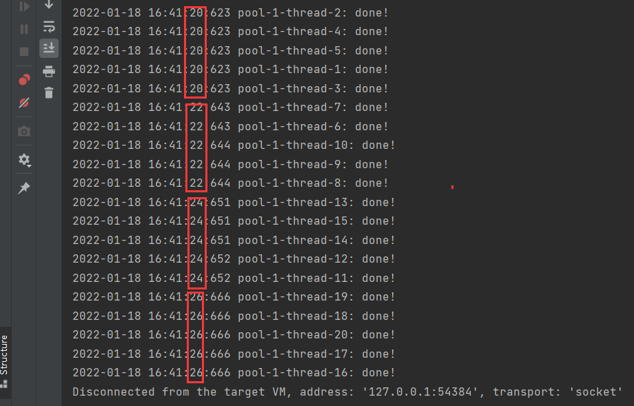
3.4读写锁 ReadWriteLock
xxxxxxxxxxReadWriteLock 是jdk5中提供的读写分离锁。它可以有效地减少锁竞争，增加系统效率。
读写锁的思想非常容易理解。读操作不会带来数据一致性问题。所以：
读-读 不阻塞
读-写 阻塞
写-写 阻塞
3.4.1 ReentrantReadWriteLock
可重入的读写锁。
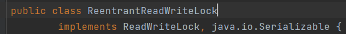
静态内部类：
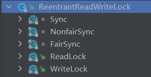
构造方法：
实例方法：（一部分）
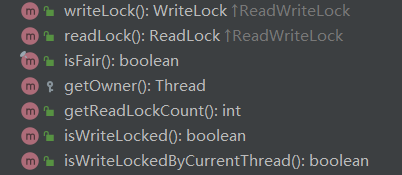
xxxxxxxxxxwriteLock() 获得写锁readLock() 获得读锁isFair()isWriteLocked() //写锁锁住了吗?isWriteLockedByCurrentThread() //写锁是被当前线程持有吗
xxxxxxxxxxclass WriteLock class ReadLock是ReentrantReadWriteLock的内部静态类，并非接口
3.4.2 简单的使用示例
xxxxxxxxxxpublic class Main6 { static private ReentrantReadWriteLock rrwl= new ReentrantReadWriteLock(); static private Lock writeLock = rrwl.writeLock(); static private Lock readLock = rrwl.readLock(); private int value = -1;
public Main6(int value) { this.value = value; }
public Main6() {
}
public static void main(String[] args) throws InterruptedException { Main6 main6 = new Main6(); Runnable runnable1 = ()->{ main6.readHandle(Main6.readLock); }; Random random = new Random(System.currentTimeMillis()); Runnable runnable2 =()->{ main6.writeHandle(Main6.writeLock,random.nextInt()); };
long start = System.currentTimeMillis(); Thread[] threads = new Thread[20]; for (int i = 0; i < 20; i++) {// threads[i]= new Thread(runnable1); // 读操作 用时508ms threads[i]= new Thread(runnable2);//写操作 用时10206ms threads[i].start(); } for (int i = 0; i < 20; i++) { threads[i].join(); } System.out.println(System.currentTimeMillis()-start);
}
public Object readHandle(Lock lock){ try { lock.lock(); Thread.sleep(500); return value; } catch (InterruptedException e) { e.printStackTrace(); return value; } finally { lock.unlock(); } } public void writeHandle(Lock lock,int newValue){ try { lock.lock(); this.value = newValue; try { Thread.sleep(500); } catch (InterruptedException e) { e.printStackTrace(); } }finally { lock.unlock(); } }
}
3.5 CountDownLatch 倒计数器
CountDownLatch 是一个多线程工具类。
它可以让某一个线程等待直到倒计数结束，再开始执行。
xxxxxxxxxx例如: 火箭发射，执行前要对1,2,3...n个仪器检查。每检查通过1个 倒计数器-1直到为0。才开始发射。例如：士兵报道，10个士兵必须全部集合以后才能出发，可以使用CountDownLatch
3.5.1 构造方法
传入一个int count 表示期望的目标数量。

3.5.2 实例方法
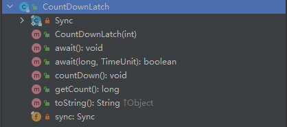
xxxxxxxxxxpublic CountDownLatch(int count);public void await();public void countDown();// -1public long getCount();
3.5.2.1 countDown()
调用本方法时 期望的目标计数-1 ，当减到0时，恢复所有阻塞在CountDownLatch的线程。

3.5.2.2 await()
让调用者线程阻塞住。直到整个CountDownLatch达到期望目标数量。

让当线程阻塞等待 ，直到CountDownLatch 减到0。 如果这个线程被 interrupt那么会回复阻塞。
3.5.2.3 getCount()
返回当前的count ，用于debug调试

3.5.3 简单的使用示例
xxxxxxxxxxpublic class Main7_CountDownLatch implements Runnable{
private static CountDownLatch cdl = new CountDownLatch(10); private static Random r = new Random(System.currentTimeMillis()); private static AtomicInteger i = new AtomicInteger(10);
public static void main(String[] args) throws InterruptedException {
Runnable task = new Main7_CountDownLatch(); ExecutorService exec = Executors.newFixedThreadPool(10);
for (int i = 0; i < 10; i++) { exec.submit(task); } cdl.await(); System.out.println("准备工作完成! 发射火箭"); exec.shutdownNow();
}
public void run() {
try { int i = Main7_CountDownLatch.i.decrementAndGet(); System.out.println("正在做准备工作..."+i); Thread.sleep(r.nextInt(10)*1000); System.out.println("完成工作..."+i); } catch (InterruptedException e) { e.printStackTrace(); } cdl.countDown(); }}
3.6 CyclicBarrier
循环栅栏。
3.6.1 什么是CyclicBarrier
xxxxxxxxxx与CountDownLatch类似。 提供一个循环使用的 倒计数器。只有当指定数量的线程达到目标以后，才能执行后续操作。这与CountDownLatch的大致一致。
xxxxxxxxxxCyclicBarrier的本意是模拟了这样的场景： 一定size的线程需要同时到达一个栅栏点Point等待。直到所有线程都达到point以后，执行一个Runnable task任务。 并且这个场景是可以循环利用的（size计数可以重新开始循环计数）
3.6.2 一些api
构造方法：
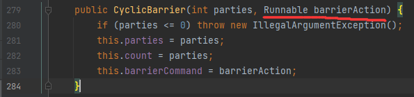
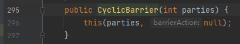
xxxxxxxxxxCyclicBarrier在创建的同时需要传入 计数器的大小parties, 以及计数器归零以后 执行的操作。也可以执行空操作。传入Runnable 为Null
实例方法（一部分）：
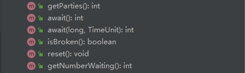
xxxxxxxxxx-1操作不再是countDown()，而是await();
3.6.3 一个简单的使用实例
xxxxxxxxxxpublic class Main8_CyclicBarrier {
public static void main(String[] args) { CyclicBarrier cb = new CyclicBarrier(10,new barrierRunnable(1));
for (int i = 0; i < 10; i++) { Thread t = new Thread(new soldierRunnable(cb),"soldier"+i); t.start(); } }
static class soldierRunnable implements Runnable { private CyclicBarrier cb;
public soldierRunnable(CyclicBarrier cb) { this.cb = cb; }
public void run() { System.out.println(Thread.currentThread().getName() + " 报道!"); try { cb.await();//通知cyclicBarrier 士兵报道
//执行到这里，说明所有士兵全齐了。 cyclicBarrier重新计数 doWork();
System.out.println(Thread.currentThread().getName() + " 执行任务完毕。通知 cyclicBarrier"); cb.await();//再次通知cyclicBarrier
} catch (InterruptedException | BrokenBarrierException e) { e.printStackTrace(); }
}
private void doWork(){ System.out.println(Thread.currentThread().getName()+ " 开始执行任务!"); try { Thread.sleep(new Random().nextInt(5) *1000); } catch (InterruptedException e) { e.printStackTrace(); } }
}
static class barrierRunnable implements Runnable{
private int flag;
public barrierRunnable(int flag) { this.flag = flag; }
public void run() { if (flag==1){ try { Thread.sleep(1000); System.out.println("全部士兵集结完毕"); Thread.sleep(1000); System.out.println("现在开始统一执行任务!"); Thread.sleep(1000); flag=2; } catch (InterruptedException e) { e.printStackTrace(); } }else if (flag==2){ System.out.println("所有士兵执行任务完毕!"); } } }}
3.6.4 和 CountDownLatch的区别
CyclicBarrier 则更强调 barrier 像一个栅栏一样。它会阻塞全部的计数线程，直到 CyclicBarrier 达到目标值。
CountDownLatch 不会直接阻塞计数线程，除非他们调用了 CountDownLatch.await()
xxxxxxxxxxCyclicBarrier会阻塞所有的 计数线程，直到CyclicBarrier到达目标值以后，所有的线程恢复阻塞。
就好像围栏一样，一些线程很快的到达了目标点，但还需要等待其他线程，当达到目标值以后，所有线程同时恢复阻塞。
3.7 LockSupport 类
LockSupport是线程阻塞工具。可以在线程任意位置阻塞线程。这个类提供的方法是 public static的，可以优雅的阻塞线程。
3.7.1 类方法
3.7.1.1 parkNanos(long)
以指定时长阻塞当前线程的线程调度，除非 permit许可可用 调用unpark会恢复许可 。


如果传入的long小于等于0，那么这个方法将不会做任何操作。

下面4点，满足其一恢复阻塞：
其他线程调用了
unpark(Thread)恢复了本线程其他线程
interrupt了本线程指定的时间到达
The call spuriously (that is, for no reason) returns.
xxxxxxxxxxpublic void testForParkNanos(){ System.out.println("park..."); long duration = Duration.ofHours(1).toNanos(); LockSupport.parkNanos(duration); System.out.println("unpark");}
3.7.1.2 unpark(Thread)
让指定线程的permit （许可）恢复可用。

让指定线程的permit （许可）恢复可用，如果线程已经是阻塞状态，那么它将恢复阻塞。
否则这个线程的下一次park将不会被park (因为 permit标志位没有被消耗。)
xxxxxxxxxxpublic class MainForUnpark {
//创建一个static的线程t1, 让其park static Thread t1 = new Thread(()->{ String name = Thread.currentThread().getName();
System.out.printf("[%s] : park...\n",name); long duration = Duration.ofHours(1).toNanos(); LockSupport.parkNanos(duration);
System.out.printf("[%s] : unpark...\n",name);
},"t1"); public static void main(String[] args) throws InterruptedException { //让t1运行 t1.start();
//让main线程休眠5秒后再尝试 unpark t1线程。 Thread.sleep(Duration.ofSeconds(5).toMillis()); String name = Thread.currentThread().getName(); System.out.printf("[%s] : now try to unpark t1\n",name); // unpark t1线程。 LockSupport.unpark(t1); //t1.interrupt(); 中断也可实现恢复阻塞 //让main线程等到t1线程执行完毕。 t1.join();
}}
3.7.1.3 park()

禁用当前线程，并保证其不会被线程调度，除非 permit 标志位可用。
如果permit标志位可用，并且 它被正常消耗，那么线程将立即恢复阻塞。(如果线程没有被阻塞，此时permit标志位如果可用，则不会立即被消耗，而是等到下一次阻塞时才会被消耗。)
线程将被阻塞，直到以下三点满足其一：
其他线程调用了
unpark，恢复了本线程其他线程中断了本线程。
错误调用。（在没有park的时候被 unpark，导致下次park失效）
park()方法返回的是void ，本方法并不向开发者汇报，由于哪种原因导致的线程恢复阻塞。调用者需要自己re-check线程恢复阻塞的原因。
3.7.1.4 parkUntil(long)
阻塞线程，直到一个时间点。
例如想要阻塞5秒，则时间点为：
xxxxxxxxxxlong timing = System.currentTimeMillis()+Duration.ofSeconds(5).toMillis();
3.7.1.5 park(Object)
阻塞当前线程（不会被线程调度）除非permit 许可可用。

如果permit 可用，并且被正确消费，那么线程会立即恢复阻塞。 否则只能满足下面3点其一才能恢复阻塞。
其他线程
unpark线程被
interrupted错误调用（在没有park的时候被 unpark，导致下次park失效）。
3.8 AQS
AbstractQueuedSynchronizer 抽象队列同步器。
AQS定义了一套多线程访问共享资源的同步器框架，许多同步类实现都依赖于它，如常用的ReentrantLock 、Semaphore 、CountDownLatch
CLH锁，CLH（Craig，Landin and Hagersten）是三个人，共同发明了一个可扩展、高性能、公平且基于自旋锁的链表；
链表中的每个线程只在本地自旋前一个节点的状态，即该节点（一个独立的线程会被包装为一个节点）不断自旋获取前一个节点的状态；每个节点都有一个状态（要么自旋，要么释放锁）。
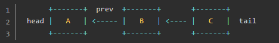
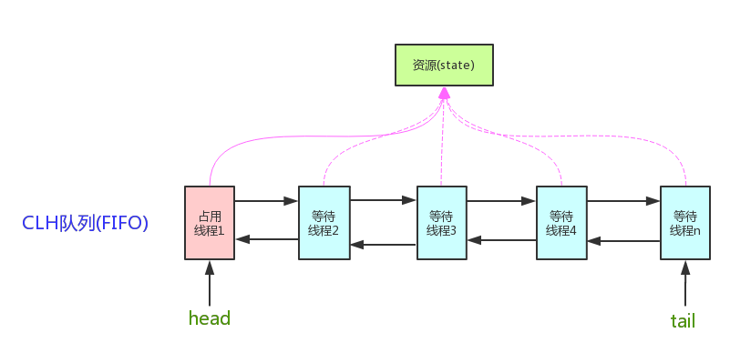
这个结构:
xxxxxxxxxx1.是一个 FIFO（first-in-first-out）队列；2.新的等待获取锁的线程先加入队尾（tail）；3.如果队列是空，则第一个新加入的节点立即获得锁；4.新加入的线程本地自旋前一个节点的状态（如 C 不断自旋获取 B 的状态）；5.(当A释放锁时，B成为第一个节点)，头节点并不能保证能够获得锁，只是有优先权，如果获取失败，则重新变为等待状态；
xxxxxxxxxx第5点详细解释: 任何一个等待资源的线程都会被包装成一个Node节点,入队其实就是等待的过程。队内节点调度规则决定了是否是公平锁。也就是说，公平锁与否取决于调度规则。在后续的accquire(int) 代码中有详细体现。
AQS使用的数据结构基于CLH变体。
3.8.1 AQS框架
AQS有两种运行模式，独占(EXCLUSIVE)和共享(SHARED)。
xxxxxxxxxx独占锁 : 同一时间只能由1个线程获得锁 例如ReentrantLock 。共享锁: 多个线程可以同一时间获得，并执行。 如 CountDownLatch Semaphore
有一种特殊的，读写锁 ReentrantReadWriteLock 可以看做两种模式的组合。即存在写锁独占，也存在读锁共享。
AQS是一种框架，可以帮助程序员快速实现一个基于自定义规则的锁。也就是获得锁的调度规则是程序员自己开发。程序员只需要重写
以下5种方法即可。
如果只是独占锁，那么仅需要实现 tryAcquire(), tryRelease()即可。
如果是共享锁，只需要实现 tryAcquireShared() ,tryReleaseShared()即可。
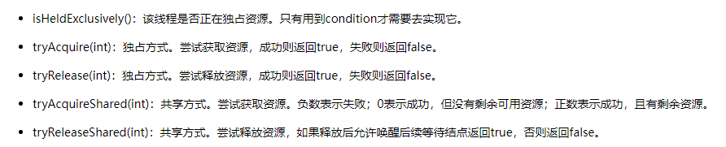
xxxxxxxxxx继承自AQS ，复杂的等待线程出队入队都不需要重新实现。
3.8.2 AQS的成员变量
int state
AQS内部有一个核心状态为state。
所有通过AQS实现功能的类都是通过修改 state的状态来操作 【线程的同步状态】。
比如在ReentrantLock中，一个锁中只有一个state状态，当state为0时，代表所有线程没有获取锁，当state =1时，代表有线程获取到了锁。
xxxxxxxxxx超过1的状态表示 重入锁的次数

提供了2种方法修改state的值，1个方法返回state值

xxxxxxxxxx不同的修改方法,将在不同的场景下使用，一个是CAS，一个在获得锁状态下修改。无需CAS
Node head

xxxxxxxxxxAQS中的成员变量 Node 类型的head节点。表示等待队列的头节点，是一个懒加载的。这个对象仅仅通过 setHead(Node) 方法进行修改。注意： 如果head变量不为null,那么这个头节点的状态位(waitState)必须保证不能是 取消状态(-2)
Node tail
xxxxxxxxxxAQS的成员变量， Node类型的 tail 节点。表示等待队列的尾节点。懒加载。仅仅只能通过 enq(Node)方法修改这个变量。

3.8.2 AQS子类Node
Node类是AQS中的子类。用于表示在AQS队列中的一个【元素节点】。
Node节点把等待的【线程】封装在成员变量，并定义了一个int类型的控制变量 waitStatus 当前节点状态。

3.8.2.1 waitStatus的值
waitStatus 表示当前节点状态，具体的值为 :
0：初始状态
CANCELLED（1）：取消状态，当线程不再希望获取锁时，设置为取消状态
SIGNAL（-1）：当前节点的后继者处于等待状态(阻塞住了)，当前节点的线程如果释放或取消了同步状态，通知后继节点
后入队的节点会挂在非取消状态节点的后面。并尝试修改前驱节点的状态为-1，告诉前面的节点，需要唤醒自己
CONDITION（-2）：等待队列的等待状态。表示当前节点正在等待锁，当调用
signal()时，进入同步队列PROPAGATE（-3）：共享模式，同步状态的获取的可传播状态
Node类型的 成员变量 Node SHARED 和 Node EXCLUSIVE 表示当前节点是否以 “独占锁”状态运行。
3.8.3 AQS里的模板方法
accquire()
xxxxxxxxxxaccquire这个方法的含义表示,阻塞等待锁。不超时，会一直等待，直到获取锁。

accquire中调用了addWaiter(Node)方法。
xxxxxxxxxx该方法表示把调用此方法的线程封装在一个新的Node节点中，并加入到AQS等待队列中。然后返回对应包装好的Node节点对象。


再看看第616行调用的 enq(Node) 方法：

xxxxxxxxxx这个方法完成2个任务，1.如果队列没有被初始化,那么自旋CAS初始化2.如果队列已经初始化了,那么自旋CAS入队尾

回到 acquire 方法中第1199行, addWaiter() 方法执行完毕以后,确保此时队列已经初始化完成，并且当前线程已经入队成功。
紧接着就会调用 accquireQueued()方法


xxxxxxxxxxacquireQueued方法的目的 : 让已经在队列中的线程, 以独占式的,不可中断的的方式获取锁。该函数表示已经在队列中的node尝试去获取锁 ， 否则挂起

在第862行调用了 predecessor()方法。目的是获取当前节点的前驱节点。

翻译：
xxxxxxxxxx返回前驱节点，或者当前驱节点为空的时候，就抛出空指针异常。调用这个方法就意味着前驱节点不能为空.有时null可以被忽略，但忽略的原因仅仅是帮助VM (意思是，在业务逻辑上不允许前驱节点为空)
不允许 prev为空也好理解 ：
xxxxxxxxxx因为在正常的流程中, 执行到 `predecessor()`方法的Node都已经完成了入队。就算是等待队列中的第一个节点，它的前驱节点也应该是在`enq(Node)`中初始化的头节点。
回到第863行：

xxxxxxxxxx发现当前Node节点的prev是头节点。这就意味着当前Node节点是队首节点,可以尝试获得锁了。调用 tryAcquire方法,获得锁。tryAcquire方法,就是开发者需要自己实现的 “尝试获得锁”的逻辑。
为了思维的连贯性(AQS没有实现这个方法)，这里引用 ReentrantLock公平锁的 tryAcquire方法()

xxxxxxxxxx//getState()返回的是 AQS的状态// state 表示重入锁的次数, state==0 表示此时没有被其他线程重入，可以尝试上锁。
protected final int getState() { return state; }
private void setHead(Node node) { head = node; node.thread = null; node.prev = null; }
xxxxxxxxxx可以看到tryAcquire表示当前线程唤醒,并可以尝试获取锁的逻辑。判断是否重入，重入次数等逻辑。
接着回到 acquireQueued 方法

在869行 ，做了如下判断：
xxxxxxxxxx能执行到869行,就说明863行的tryAcquire 抢锁失败了，如果抢锁成功了,就会直接return出去。这意味着2种情况: p!=head 或者 (虽然p==head ,但是tryAcquire失败了)。如果p!=head 说明当前的节点不是等待队列的头节点，有其他Node排在当前节点的前面,所以当前Node需要阻塞住。
那么接下来看看869行的 shouldParkAfterFailedAcquire(Node,Node) 传入了 前驱节点 和 当前节点

xxxxxxxxxx本方法检查和更新当前Node的状态。 如果当前Node节点需要阻塞等待,那么本方法会返回true。如果不需要阻塞等待,那么返回false,此时外层的acquireQueued方法会继续自旋CAS尝试抢锁。这个方法是所有的获取锁循环中 主要的信号控制。 前提是,传入的前驱节点==当前节点的prev
那么进一步看看，到底是什么时候需要让线程park 什么时候不需要线程 park ？

总结一下：
xxxxxxxxxx当前驱节点是 SIGNAL状态,可以唤醒后继节点,可以安心阻塞。如果前驱节点被取消了,就修改引用关系,从后向前找到第一个没有取消的节点,修改向后的引用,指向自己。返回false,然后重新自旋一次。如果前驱节点的状态是0初始状态/共享状态(共享锁),就将其修改为 SIGNAL,让其释放了锁以后通知后续节点。
parkAndInterrupt() 真正park住线程的方法：
xxxxxxxxxx/** * 返回Thread是否被中断。 */private final boolean parkAndCheckInterrupt() { LockSupport.park(this); return Thread.interrupted(); //我们知道线程中断了,interrupted标志位将会为true}
到此为止，park住线程和获得锁的逻辑完成。但还有坑没填。例如:被取消的节点如何清除？
xxxxxxxxxx代码看到这里，我们只能先猜测,在某些场景下，将抛出异常。然后被 859行的try catch捕获，然后调用 cancelAcquire 取消抢锁方法

cancelAcquire方法如下

xxxxxxxxxx取消当前尝试获得锁的Node节点。这个方法完成的任务：1. 将当前节点的状态置为取消,解除当前节点绑定的Thread2. 将当前取消节点的[前置非取消节点]和[后置非取消节点]"链接"起来；3. 如果前置节点释放了锁，那么当前取消节点承担起后续节点的唤醒职责。
关于cancelAcquire方法参考博客
https://blog.csdn.net/IToBeNo_1/article/details/123506221
xxxxxxxxxxprivate void cancelAcquire(Node node) { // 如果传入的Node为null,就忽略 if (node == null){ return; } node.thread = null; //如果node不为null,先将Node中包含的线程引用清空 //跳过取消状态的头节点 Node pred = node.prev; while (pred.waitStatus > 0) node.prev = pred = pred.prev; //找到第一个不是取消状态的节点pred。并把当前节点node的 prev设置成这个pred // predNext is the apparent node to unsplice. CASes below will // fail if not, in which case, we lost race vs another cancel // or signal, so no further action is necessary. Node predNext = pred.next;
//这里可以使用不加任何条件的修改. 而不是使用CAS操作. //因为这里一旦修改为 取消状态,其他节点就会跳过我们 // Before, we are free of interference from other threads.在执行这一步前，我们都可以不考虑其他线程的影响 ? node.waitStatus = Node.CANCELLED;
//如果当前节点是尾节点,那么就移除我们自己, 使用CAS将尾节点替换为前驱节点 if (node == tail && compareAndSetTail(node, pred)) { //如果替换尾节点成功,就 CAS把 pred的next变量修改为null compareAndSetNext(pred, predNext, null); } else { // If successor needs signal, try to set pred's next-link // so it will get one. Otherwise wake it up to propagate. int ws; if (pred != head && ((ws = pred.waitStatus) == Node.SIGNAL || (ws <= 0 && compareAndSetWaitStatus(pred, ws, Node.SIGNAL))) && pred.thread != null) { Node next = node.next; if (next != null && next.waitStatus <= 0) compareAndSetNext(pred, predNext, next); } else { unparkSuccessor(node); }
node.next = node; // help GC } }
至此，acquireQueue的全部分支都拆解完毕，现在来宏观的看一下acquireQueue方法
还记得acquireQueue的注释中怎么描述这个方法的么？

xxxxxxxxxx为什么是 uninterruptible的? 这不是能够判断线程是否被 interrupt么。原因是 acquireQueued方法只能在线程拿到锁以后返回interrupted中断位。而不是在任何时候中断以后,立刻取消排队,恢复线程阻塞。
下面重新来看acquireQueued方法:

最终如果中断被返回了,那么就会返回true，返回到最开始的acquire方法


xxxxxxxxxx因为
3.8.3 ReentrantLock
ReentrantLock中的 Sync类继承了 AQS。
ReentranLock实现了公平锁(内部类 FairSync) 和 非公平锁（内部类 NonfairSync)
xxxxxxxxxxFairSync 和 NonfairSync 只重写了 tryAccquire方法。

3.8.3.1 FairSync
查看lock加锁方法：

转而调用 公平同步器的tryAccquire源码

作为对比，下面是 非公平Sync的 Lock方法
xxxxxxxxxx直接在lock方法中尝试CAS抢锁，失败了再调用 AQS.acquire();

xxxxxxxxxxAQS.accquire()会转而调用非公平Sync的 tryAcquire()

NonfairSync的 tryAccquire()方法源码：

4. 线程复用：线程池
与连接池的思想一致，频繁的创建和销毁 线程，会带来较大的开销。这反而影响cpu的利用率。所以使用线程池解决这一问题。
4.1 JDK对线程池的支持
JDK提供了一套Executor框架，帮助开发人员有效的进行线程控制。其本质就是线程池。
Executors类 扮演线程池工厂的角色，可以通过Excutors拿到一个拥有特定功能的线程池。
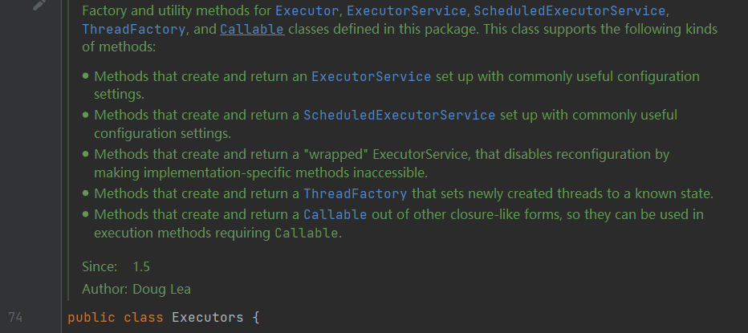
xxxxxxxxxxExecutors是如下类Executor, ExecutorService, ScheduledExecutorService, ThreadFactory的 工厂类，以及包含了一些工具方法。
4.1.0 Executor 接口
在 jdk中交给线程执行的代码片段被抽象为 Task （任务）。
相应的，用于执行 task的被称为 Executor (执行器) 。 执行器有很多种实现，例如 ThreadPoolExecutor ForkJoinPool 。
Executor 是一个简单的接口。只有1个返回值为void的方法 execute(Runnable) 。
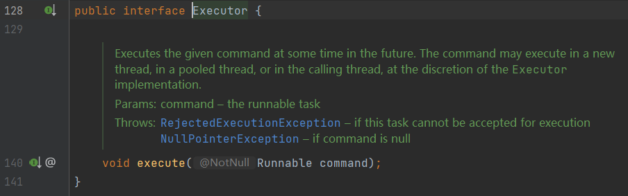
Executor比较简单，行为也少。 用于执行一个服务(复杂的task)的接口为 ExecutorService
4.1.1 ExecutorService 接口
ExecutorService 增加了对【执行器】行为的各种控制，应用也更佳广泛。
ExecutorService 执行器服务。继承了 Executor
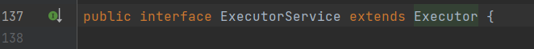
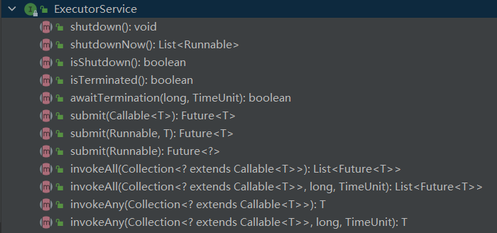
xxxxxxxxxx通过ExecutorService的方法(结束task、立即结束task、提交task、是否终止、invoke)可以看到。// 一个被执行的任务，可能是Runnable/Callable 笼统的称为taskExecutor只是一个纯粹的执行器。而ExecutorService增加了对执行器行为的各种控制，应用也更佳广泛。
4.1.1.1 接口方法
submit(Runnable)
用于执行一个Runnable 。
xxxxxxxxxx
submit(Callable)
用于执行一个Callable<T> ，并返回 Future<T>

提交一个【带有返回值的】 task ，并且返回一个 Future代表将来的返回值（任务执行完毕后返回的返回值）。
shutdown()

开始有序的关闭线程池，之前提交的task仍然会执行，但拒绝接收后续的新task。 如果线程池已经shutdown再次调用方法无效。

这个方法不是阻塞方法，会直接返回，不会等到之前提交的任务执行完毕后才返回。
使用awaitTermination() 代替等待。
shutdownNow()
isShutdown()
4.1.2 线程池的优点
1.节约开销
xxxxxxxxxx“在线程池中执行任务”比“为每一个任务分配一个线程”优势更多。 线程的频繁创建和销毁将带来很大的开销。线程池通过重用线程，而不是创建新线程。可以避免反复创建/销毁带来的巨大开销。
2.提高响应速度
xxxxxxxxxx当任务被提交到线程池时，通常是空闲线程直接执行，而不是创建线程。这样提高了任务的响应速度。
4.1.3 Executors类
Executors 是工厂类，用于创建各种不同功能策略【[线程池】。（例如固定数量工作线程的线程池,定时的线程池）
线程池的功能策略其实是由 工作队列（work queue）决定的。
xxxxxxxxxx任务(task)保存在工作队列中，所有的工作线程（work Thread）从工作队列中获取一个任务，执行，如此循环
总的来讲，工厂方法屏蔽了 ExecutorService创建实例对象等内部细节。使用起来是很方便的，如果需要细致研究则需要进一步翻看源码。先从工厂类 Executors入手，由浅入深
Executors能创建如下几种线程池：
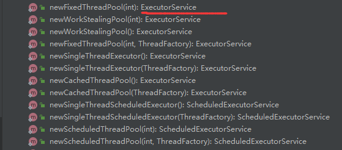
4.1.3.1 newFixedThreadPool()
xxxxxxxxxxnewFixedThreadPool(int):ExecutorService //将一个固定数量的线程池。执行task(Runnable)时，如果有空闲线程，就立即执行。否则会加入等待队列，直到有空闲线程自动执行。//线程将一直存在，显式调用了 shutdown()才会关闭。
xxxxxxxxxxnewSingalThreadExecutor();//返回只有一个线程的线程池。超过1个任务，将加入到等待队列当中。线程空间后，按照FIFO顺序执行等待队列
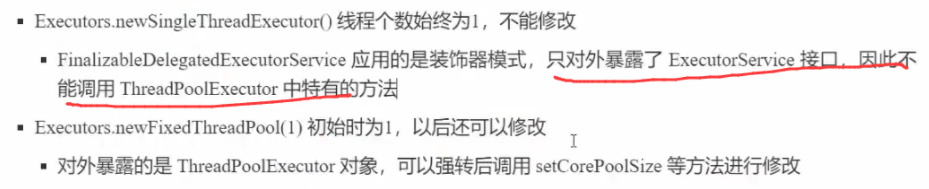
xxxxxxxxxxnewCachedThreadPool();//返回一个根据实际情况调整线程数量的线程池。如果有空闲线程，那么直接复用。如果没有，则新开启一个线程。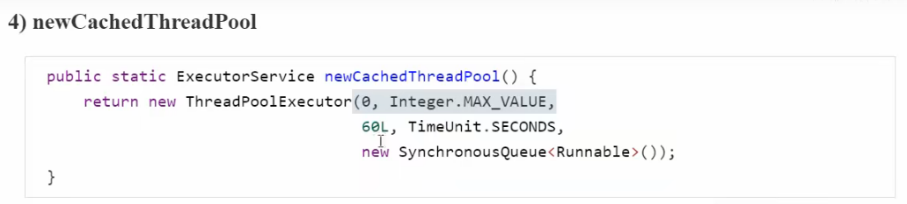
xxxxxxxxxx核心线程数是0。所有线程超过了存活时间的线程都可能被回收。最大线程是 Integer.MAX_VALUE。 意味着可以创建非常多的线程，线程是宝贵资源不应该无节制的创建。
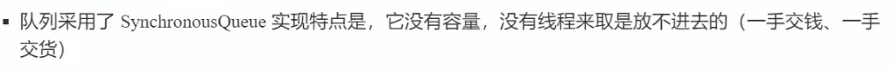
xxxxxxxxxxnewSingalThreadScheduledExecutor();//带定时的，或者按周期循环的只有一个线程的线程池xxxxxxxxxxnewScheduledThreadPool(int);//带定时任务、或者周期循环的固定数量线程池
//Threads that have not been used for sixty seconds are terminated and removed from the cache.
4.1.3.2 Executors 简单使用
xxxxxxxxxxpublic class Main_ThreadPool { public static void main(String[] args) throws InterruptedException {
ThreadPoolExecutor exec = (ThreadPoolExecutor) Executors.newFixedThreadPool(10);; System.out.println(exec.getCorePoolSize()); for (int i = 0; i < 10; i++) { exec.submit(new runnable1()); } while (true){ int activeCount = exec.getActiveCount(); if (activeCount==0){ exec.shutdown(); System.exit(-1); } Thread.sleep(1000); }
}
static class runnable1 implements Runnable{
public void run() { try { Thread.sleep(1000); System.out.println(Thread.currentThread().getName() + " working"); } catch (InterruptedException e) { e.printStackTrace(); } } }}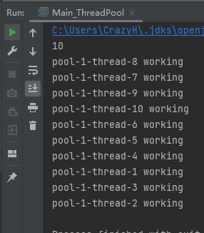
4.1.5 ThreadPoolExecutor
线程池真正的实现类 ThreadPoolExecutor。
4.1.5.1 构造方法
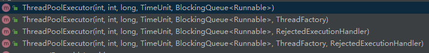
.
Executors 工厂方法创建不同特点的线程池是 通过 ThreadPoolExecutor 构造方法中 传入不同的参数实现的。
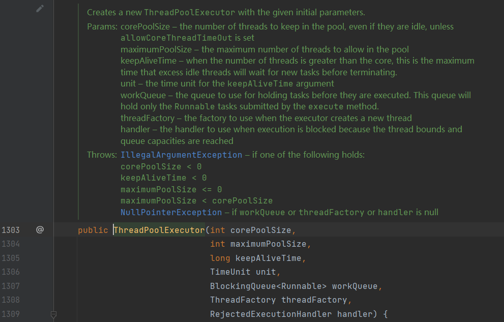
xxxxxxxxxx“核心线程数”(corePoolSize)线程池中线程的数量，即使是空闲也不会销毁。除非设置了allowCoreThreadTimeout“最大线程数”(maximumPoolSize) //扩容线程、救急线程"生存时间"(keepAliveTime) 当线程池中线程的数量>corePoolSize ，超过生存时间的空闲线程会被销毁“时间尺度” unit“工作队列”(BlockingQueue)"线程工厂"(ThreadFactory) ThreadFactory 用于线程池创建一个新的线程“拒绝策略” (handler) 当因为线程绑定，或因为达到了队列容量上限，而拒绝执行时的策略
xxxxxxxxxx当task超过了队列长度,尝试使用扩容线程(救急线程)。只有有界队列，才可能使用扩容线程。
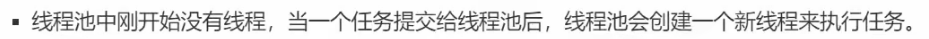
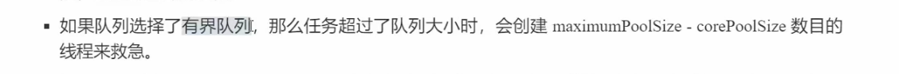
在 Executors.newFixedThreadPool()的源码中：
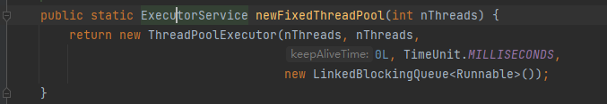
xxxxxxxxxx事实上new了一个 ThreadPoolExecutor 实现类的实例对象。向上转型为 ExecutorService 接口
4.1.5.2 setter 方法
4.1.5.2.1 setCorePoolSize()

设置核心线程的数目。如果新设置的数目比之前的小，那么超出的核心线程在空闲时将会被关闭。
如果超过原来的数目，那么当执行队列任务的时候将开启新的核心线程。
4.1.5.2.2 setThreadFactory()
设置线程工厂，当创新新的线程时，会使用 ThreadFactory创建。
4.1.5.2.3 allowCoreThreadTimeOut(boolean)

设置是否允许核心线程过期，空闲超过 keep-alive-time的核心线程将被停止。
如果是fasle 那么核心线程永远也不会被关闭。
4.1.5.3 getter方法
4.1.5.3.1 getActiveCount()
返回当前正在执行task的线程数量，是一个预估值。

4.1.5.4 其他实例方法
4.1.5.4.1 shutdown()

线程池的状态改为 SHUTDOWN , 不会接收新的任务。已提交的任务会执行完毕。 这个方法不是阻塞方法，会立即返回。
4.1.5.4.2 shutdownNow()

会尝试停止所有正在活跃的task , 停止正在排队等待的task， 并且返回等待队列中的task。
这个方法不是阻塞方法，会立即返回。
通过Thread.interrupt的方式中断正在运行的task， 只是尽最大努力终止正在运行的task，不保证一定能终止。
4.1.5.4.3 preStartCoreThread()
预先开启一个核心线程，让其空闲并等待一个task

这个方法将会覆盖原本的创建核心线程的策略。如果核心线程已经被初始化，那么这个方法返回 false
4.1.5.4.4 prestartAllCoreThreads()
预先开启所有核心线程,并返回成功开启的个数。

4.1.5.4.5 purge()

尝试移除工作队列中的全部被取消的Future类任务。
被取消的任务将永远也不会被执行，但是可能会占用 任务队列中的位置，直到工作线程动态移除他们，或者调用purge()方法。
4.1.5.2 成员变量
ThreadPoolExecutor的构造参数
corePoolSize:
xxxxxxxxxx线程池线程初始数量、最小数量。maximumPoolSize:
xxxxxxxxxx线程池中最大的线程数量。keepAliveTime
xxxxxxxxxx等待工作的空闲线程的超时时间。当存在多于corePoolSize数量的线程数时，同时允许线程超时，（allowCoreThreadTimeOut(boolean)方法）多余的空闲线程会在keepAliveTime后销毁unit 时间单位
workQueue
xxxxxxxxxxBlockingQueue<Runnable> workQueue任务队列。被提交但尚未执行的任务。threadFactory
xxxxxxxxxx线程工厂。用于创建线程，一般用默认即可handler ： 拒绝策略
xxxxxxxxxxRejectedExecutionHandler handler当任务太多来不及处理时，如何拒绝任务。
4.1.5.3 CachedThreadPool
Executors 中生产一个Cached线程池的工厂方法如下：
经过如下代码黑盒测试：
xxxxxxxxxxpublic class Main_ThreadPoolExecutor {
public static void main(String[] args) throws InterruptedException {
ThreadPoolExecutor threadPoolExecutor = new ThreadPoolExecutor(5, Integer.MAX_VALUE, 1L, TimeUnit.SECONDS, new LinkedBlockingQueue<>());//SynchronousQueue<>() threadPoolExecutor.allowCoreThreadTimeOut(true); for (int i = 0; i < 100; i++) { threadPoolExecutor.submit(new Main_ThreadPool.runnable1()); }
Scanner scanner = new Scanner(System.in); while (scanner.hasNext()){ String next = scanner.next(); //在任意时刻键入任意值，查看此时线程池状态 System.out.println("CompletedTaskCount : "+threadPoolExecutor.getCompletedTaskCount()); System.out.println("CorePoolSize"+threadPoolExecutor.getCorePoolSize()); System.out.println("PoolSize "+threadPoolExecutor.getPoolSize()); BlockingQueue<Runnable> queue = threadPoolExecutor.getQueue(); System.out.println("queue size : "+queue.size()); } }}
xxxxxxxxxx线程池扩容，除了与最大值有关，也和 Queue如果是new LinkedBlockingQueue<>()，则存在1个及以上的线程，无论是否是空闲。则都不会尝试扩容。（只有初始为0，才尝试扩容1个线程，然后后续task全部都添加进等待队列）如果是SynchronousQueue，则会按照 Executors.newCachedThreadPool的说明那样运行。
4.1.5.4 execute（Runnable）
在jdk中，称没有返回值的Runnable为command命令。
在ThreadPoolExecutor中有一个重要的成员变量 AtomicInteger ctl
xxxxxxxxxxctl 是主要的线程池控制状态。它由包装了2部分含义：线程池工作者数量(workerCount)、运行状态(runState)。为了将这两部分融合到一起，规定线程池线程的数量小于等于2^29-1 。再未来如果AtomicInteger不够，可能会扩充为AtomicLong。这样做的目的是,使用int会更简单也更高效。The workerCount is the number of workers that have been permitted to start and not permitted to stop.工作者数量(workerCount是指那些已经提交并开始，但未执行完毕的线程)runState的定义如下:RUNNING: Accept new tasks and process queued tasksSHUTDOWN: Don't accept new tasks, but process queued tasksSTOP: Don't accept new tasks, don't process queued tasks, and interrupt in-progress tasksTIDYING: All tasks have terminated, workerCount is zero, the thread transitioning to state TIDYING will run the terminated() hook method
xxxxxxxxxx执行期望顺序如下 : 扩增核心线程并执行任务，如果失败 ->退而求其次 加入到等待队列 ,如果队列满了还失败 -> 拒绝策略
添加工作线程方法 addWorker(Runnable,boolean)
xxxxxxxxxx是一个阻塞方法,一定会返回ture或者false方法参数boolean 表示这个线程是否是核心线程。 true表示核心线程，false表示非核心线程。用于判断创建线程数量是 corePoolSize 还是MaximumPoolSize
拒绝方法： ThreadPoolExecutor.reject(Runnable)
xxxxxxxxxx执行拒绝策略Handler的rejectedExecution方法。也就是拒绝策略接口要求实现的方法。
4.1.6 Task的执行结果 : Future
委托给线程执行的任务(task)，最终应该有一个【执行结果】。
这个【执行结果】是广义上的结果，并不单指task运行后的结果，还可以描述任务的状态。
例如 ： 此次任务的返回对象，任务当前是否被调用，甚至是异常信息。
xxxxxxxxxxFuture框架的思想是: 当用户开启了一个异步执行任务以后，立即返回一个装有异步执行结果的容器Future。当达到一个合适的时机用户想要去处理异步执行任务的结果时，再去处理这个Future (广义上的处理:拿到结果或处理异常)
4.1.6.0 理解1
xxxxxxxxxxFuture 直译“未来”，它是一个立即返回给主调函数的容器。这个数据类型将多线程和异步紧密结合在一起。Future 可以表示在未来的某个时间点。在这个时间点上，这个任务可以完成或终止。它可以描述一个任务的生命周期
4.1.6.1 Future接口方法
下面是Future 接口的方法。
4.1.6.1.0 get()
核心方法。
get方法是一个阻塞方法。
4.1.6.1.1 cancel()

尝试去取消当前任务。如果这个任务 已经完成/ 已经取消 的话，这个方法会返回 false。
如果方法返回true ，同时这个Task在调用cancel之前没有执行，那么这个任务永远也不会运行。
4.1.6.1.2 isCancelled

4.1.6.1.3 isDone()

4.1.6.2 Runnable/Callable
在Future接口中。看到了一个关键的get()方法
它专门用于返回一个计算任务处理后的结果。
那么对于Task来说：
xxxxxxxxxxRunnable 可以作为 Task的核心。但它具有很大局限：它没有返回值，并不能抛出异常。Callable 同样也可以作为Task的核心。它可以返回一个值，也可以抛出一个异常。它还是一个函数式接口。真的很妙
4.1.6.3 限时获取get
Future.get(long,TimeUnit)
有时候，某个任务无法在指定时间内完成，那么将不再需要它的结果，此时可以放弃这个任务。
xxxxxxxxxx例如，某个Web应用程序需要从外部网站获取广告信息，如果该应用在2秒钟内获取不到广告信息，则显示一个默认的广告。这样即使不能得到广告信息也不会长时间降低应用的响应速度。
xxxxxxxxxx类似的，Web应用程序可以从多个源地址获取数据。超出了限定时间，那么只显示在限时内获取的信息。
此时，可以使用Future.get(long,TimeUnit) 来完成一个限时获取。当超过时间仍没有返回结果，会抛出一个TimeOutExeception。在任务超时后，应该立即停止，避免继续计算一个不再使用的结果而浪费资源。
4.1.6.3.1 示例代码1
给出一个简单的例子： 限时获取，如果获取失败中断任务
xxxxxxxxxxpublic class Main10_Future { public static void main(String[] args) { MyData data = getData(); }
static MyData getData(){ int parallelSize = Runtime.getRuntime().availableProcessors(); ExecutorService executorService = Executors.newFixedThreadPool(parallelSize);
Future<MyData> task = executorService.submit(new getDataFromDataSource("https://www.baidu.com/data"));
try { MyData myData = task.get(1L, TimeUnit.SECONDS); if (myData!=null) return myData;
} catch (InterruptedException e) { e.printStackTrace(); } catch (ExecutionException e) { e.printStackTrace(); } catch (TimeoutException e) { System.out.println("超时了... 尝试中断任务"); task.cancel(true);// e.printStackTrace(); } return null; } static class getDataFromDataSource implements Callable<MyData>{
private final String dataSource;
public getDataFromDataSource(String dataSource) { this.dataSource = dataSource; }
public MyData call() throws Exception { System.out.println("get Data from "+dataSource); Thread.sleep((long) (Math.random()*2500));
ByteBuffer allocate = ByteBuffer.allocate(24); IntStream.range(0,24).forEach(x->allocate.put((byte) (Math.random()*100))); return new MyData(allocate); }
} static class MyData {
private final ByteBuffer byteBuffer;
public MyData(ByteBuffer byteBuffer) { this.byteBuffer = byteBuffer; }
public ByteBuffer getByteBuffer() { return byteBuffer; } }
}
4.1.6.3.2 示例代码2
“预定任务”方法可以很简单的扩展到多线程上。 考虑这样一个旅行预定门户网站，用户输入旅行目的和日期以后。门户网站获取并限时来自多条航线、旅店或者汽车租赁公司的报价。在这个过程中，可能会调用Web服务，访问数据库，执行一个EDI事务等。在这种情况下，不适宜让页面的响应等待过久，对于在指定时间没有返回结果的服务提供者，要么不予显示，要么返回一个提示信息“Did not hear from ... in time ”
此时可以使用一连串的submit ，也可以使用invokeAll。
xxxxxxxxxxinvokeAll(Collection,long,TimeUnit) 表示带限时的执行Collection内的全部Future超时的Future将被直接取消(cancel)
xxxxxxxxxxpublic class Main10_Future1 { public static void main(String[] args) { HashMap<String, MyData> dataTimeOut = getDataTimeOut();
dataTimeOut.forEach((x,y)->{ System.out.println(x); ByteBufferUtil.showBufferHEX(y.getByteBuffer()); });
}
static HashMap<String,MyData> getDataTimeOut(){ HashMap<String,MyData> res = new HashMap<>();
Date date = new Date(); String dest = "大庆机场";
List<String> urls = new LinkedList<>(); Collections.addAll(urls,"https://www.baidu.com","https://www.sina.com","https://www.163.com/");
ExecutorService executorService = Executors.newFixedThreadPool(3); List<Callable<MyData>> callables = new LinkedList<>();
IntStream.range(0,3).mapToObj(x-> new Main10_Future1.getDataFromDataSource1(urls.get(x),dest,date)) .forEach(callables::add); try { List<Future<MyData>> futureList = executorService.invokeAll(callables, 1500, TimeUnit.MILLISECONDS); for (int i = 0; i < futureList.size(); i++) { Future<MyData> future = futureList.get(i); if (future.isDone()){ res.put(urls.get(i),future.get()); }else { res.put(urls.get(i),null); } } } catch (InterruptedException e) { e.printStackTrace(); } catch (ExecutionException e) { e.printStackTrace(); }catch (CancellationException e){ System.out.println("超时...\n成功获取"+res.size()+"个");// e.printStackTrace(); } return res; }
static class getDataFromDataSource1 implements Callable<MyData>{
private String dataSourceUrl; private String dest; private Date date;
public getDataFromDataSource1(String dataSourceUrl, String dest, Date date) { this.dataSourceUrl = dataSourceUrl; this.dest = dest; this.date = date; }
public MyData call() throws Exception { System.out.println("get data from : "+dataSourceUrl); return getDate(dataSourceUrl,dest,date); } private MyData getDate(String dataSourceUrl,String dest,Date date) throws InterruptedException { //模拟获取数据需要的延迟 Thread.sleep((long) (Math.random()*2000)); ByteBuffer byteBuffer = ByteBuffer.allocate(24); IntStream.range(0,byteBuffer.capacity()).forEach(x->byteBuffer.put((byte) (Math.random()*4096))); return new MyData(byteBuffer); } }}
4.1.6.4 FutureTask
xxxxxxxxxxRunnableFuture继承了Runnable 和 Future 表示: 一个可运行的Future。就相当于结合了Runnabe(可运行的任务),又能拿到执行结果(Future)
FutureTask 是 RunnableFuture接口的实现类。
FutureTask 是Future框架的核心类。当submit任何一个Callable和Runnable都会被封装为一个FutureTask。
因为FutureTask 改写了run的逻辑。
4.1.6.4.1 FutureTask 成员变量
FutureTask重要的成员变量如下：
xxxxxxxxxxCallable<V> callable; //任务本体Object outcome; // 返回任务的产物。 广义上的产物，包括正常执行后的结果或者任务执行失败的异常。
4.1.6.4.2 FutureTask.run
FutureTask 重写了Runnable.run的逻辑
4.1.4 计划任务 ScheduledThreadPool
使用Executors工具类创建一个 ScheduledThreadPool，
通过Executors.newSingleThreadScheduledExecutor()方法:
4.1.4.1 ScheduledExecutorService接口
对于普通的【线程池】来说ExecutorService接口是一个任务的抽象。
对于【计划任务线程池】来说 ScheduledEecutorService 接口抽象代表了一个 【计划任务】
对于【计划任务线程池】来说 ScheduledFuture 接口抽象代表了【计划任务】的执行结果。
4.1.4.1.1 ScheduleExecutorService接口方法
ScheduleExecutorService 接口的方法如下：
执行的task除了 Runnable 还可以是 Callable 。
schedule()
在给定的【延迟】以后，执行一个 【一次性】的task。

在给定的【延迟】以后，执行一个 【一次性】的 ，带有【返回值】的 task。

ScheduleAtFixedRate()
以固定的频率执行计划
xxxxxxxxxx在给定的初始延迟以后，开始执行计划任务,并以固定周期开始执行任务。（无论上一次任务是否执行完毕，总是在固定的时刻尝试执行新的task）第一次执行时刻为： initalDealy第二次执行时刻为 ： initalDealy+period第三次执行时刻为 ： initalDealy+period*2如果到达下一个执行时刻，上次任务还未执行完毕，就等待。执行完毕后，立即开启下次task。
xxxxxxxxxx在initalDelay初始延迟以后，执行task。直到task执行完毕以后。等待固定的delay开始下一次任务。
4.1.4.2 计划任务结果ScheduledFuture
Future 是一个普通的线程池任务的结果。
ScheduledFuture 是 定时任务线程池的结果。
ScheduledFuture接口并没有定义任何的方法 , 仅仅是 Delayed 和 Future接口的组合。
xxxxxxxxxxDelayed 表示剩余的delay时间。因此ScheduledFuture对象具有存放执行结果的能力(Future)，还有显示剩余delay的能力。
接口原型如下：

4.1.4.2.1 继承树
xxxxxxxxxx实现类：ScheduledFutureTask
4.1.4.3 ScheduledExecutorService 简单的使用示例
4.1.4.3.1 示例_1
测试scheduleAtFixedRate(Runnable,long,long ,TimeUnit)
xxxxxxxxxx/** * * 测试 ScheduleThreadPool * * ScheduleExecutorService.scheduleAtFixedRate() 以固定频率开启task * * */public class Main3_ScheduleExecutorService implements Runnable{ public static void main(String[] args) {
ScheduledExecutorService scheduledExecutorService = Executors.newSingleThreadScheduledExecutor();
System.out.println("当前时间 : "+getTime() + " 延迟1秒后启动计划线程,周期为2秒"); ScheduledFuture<?> scheduledFuture = scheduledExecutorService.scheduleAtFixedRate( new Main3_ScheduleExecutorService(), 1L, 2L, TimeUnit.SECONDS);
Scanner s = new Scanner(System.in); while (s.hasNext()){ s.next(); boolean done = scheduledFuture.isDone(); System.out.println("done : " + done); long delay = scheduledFuture.getDelay(TimeUnit.SECONDS); System.out.println("delay : "+delay); }
}
public void run() { try { System.out.println("线程sleep5秒 "+getTime()); Thread.sleep(5000); } catch (InterruptedException e) { e.printStackTrace(); } }}让上一次task执行总时长>周期：
得到的效果就是：上一次任务执行完毕后，立刻执行下一次任务。
修改代码，让线程sleep1秒， 执行task总时长< 周期 ，则为正常周期：
4.1.4.3.2 示例_2
测试scheduleWithFixedDelay()
xxxxxxxxxx/** * * ScheduledExecutorService.scheduleWithFixedDelay() * 在上一次task结尾开始计时，以固定delay开始执行下一次task * */public class Main4_ScheduleWithFixedDelay implements Runnable{
public static void main(String[] args) {
ScheduledExecutorService execService = Executors.newSingleThreadScheduledExecutor();
ScheduledFuture<?> sf = execService.scheduleWithFixedDelay(new Main4_ScheduleWithFixedDelay(), 0L, 2L, TimeUnit.SECONDS);
Scanner s = new Scanner(System.in); while (s.hasNext()){ s.next();
long delay = sf.getDelay(TimeUnit.SECONDS); System.out.println("remaining delay : "+delay); boolean cancelled = sf.isCancelled(); System.out.println("cancelled : " + cancelled); boolean done = sf.isDone(); System.out.println("done : " + done);
}
}
public void run() {
try { System.out.println(Thread.currentThread().getName()+" "+getTime()+" 线程sleep3秒，并以固定的2秒delay"); Thread.sleep(3000); } catch (InterruptedException e) { e.printStackTrace(); }
}}task耗时3秒，固定delay耗时2秒。所以两次输出语句相差5s 符合预期。
4.1.4.4 Delayed接口

一个mix-in风格的接口，用于说明Delayed对象等待的延迟时间的数量。
4.1.4.4.1 接口方法
传入一个时间单位TimeUnit , 返回对应单位下剩余delay的时间。
4.1.5 BlockingQueue
JDK中的描述：
xxxxxxxxxxBlockingQueue methods come in four forms, with different ways of handling operations that cannot be satisfied immediately, but may be satisfied at some point in the future:
xxxxxxxxxxBlockingQueue提供了不同的处理操作来应对如下情况：不能立即确认，但可能在未来的某个时间点确认对应的操作。
xxxxxxxxxx阻塞队列不支持null 元素值。null值将会严格抛出NullPointerException
xxxxxxxxxx阻塞队列是线程安全的。使用了内部锁或者其他的同步控制手段。
阻塞队列的4类方法总结
| 抛出异常 | 特殊值 | 阻塞 | 超时 | |
|---|---|---|---|---|
| 插入 | ||||
| 移除 | ||||
| 审查 | 不支持 | 不支持 |
在4.1.3中，提到过 ThreadPoolExecutor的构造方法，其中一个重要的参数
“BlockingQueue ”可以深度影响线程池的表现。
4.1.5.1 SynchronousQueue
直接提交队列。
SynchronousQueue没有容量。也就是没有等待队列，新来的task如果没有空闲线程，会直接创建新的线程执行task。通常需要设计很大的maximunPoolSize。否则很容易执行拒绝策略。
4.1.5.2 ArrayBlockingQueue
有界的任务队列。
ArrayBlockingQueue提供了一个定长的任务队列。在创建ArrayBlockingQueue实例时，必须指定这个长度。
如果线程池数量小于corePoolSize会创建新的线程。如果等待队列已满，且当前线程数小于 maximunPoolSize则会创建新的线程执行task，否则执行拒绝策略。
xxxxxxxxxx也就是说，除非系统特别繁忙，task特别多，使队列满了以后才尝试增加线程数量。不过可以人为的设置 ArrayBlockingQueue的大小，适当减少等待队列长度。
4.1.5.3 LinkedBlockingQueue
无界任务队列。
任务队列无限长，除非coolPoolSize设置为0，否则永远不会扩容新的线程。
初始线程数量即为 coolPoolSize，不会继续扩容。新加入的task会加入队列。因为队列无限长，会直至耗光系统内存。
4.1.5.4 PriortyBlockingQueue
优先任务队列
可以控制任务的执行先后顺序。是特殊的无界队列。
带优先级的无界队列。先执行优先级高的任务，其他特性和无界队列一致。
4.1.6 线程池拒绝策略
4.1.5中提到过拒绝策略。也是下图中构造方法参数之一。
RejectedExecutionHandler 策略接口，通过实现这个接口，可以自定义策略。
当线程池的队列已满，又不允许扩容线程的情况下，执行拒绝策略。
4.1.6.1 JDK内置4种拒绝策略
AbortPolicy : 直接抛出异常，阻止系统正常工作
CallerRunsPolicy: 只要线程池没有被shutdown，该task直接在调用者线程中执行。这样做不会丢弃task，但有可能会严重影响调用者线程的工作
DiscardOldestPolicy:该策略将丢弃一个最老的task。也就是即将运行的task
当阻塞队列是SynchronousQueue时，会出错。
DiscardPolicy: 丢弃无法处理的task，不抛出异常
如果以上无法满足需求，可以自己实现RejectedExecutionHandler接口
4.1.6.2 RejectedExecutionHandler 接口
rejectedExecutionHandler接口源码：
4.1.6.3 其他框架的拒绝策略
4.1.6.3 自定义拒绝策略
jdk1.8 可运行。
xxxxxxxxxxpublic class Main5_RejectedExecutionHandler {
public static void main(String[] args) {
ThreadPoolExecutor exec = new ThreadPoolExecutor(5,5,60, TimeUnit.SECONDS,new ArrayBlockingQueue<Runnable>(2),new myRejectedHandler());
for (int i = 0; i < 20; i++) { exec.submit(new myRunnable("t"+i)); }
}
static class myRejectedHandler implements RejectedExecutionHandler{
public void rejectedExecution(Runnable r, ThreadPoolExecutor executor) {
try { Class<?> future = Class.forName("java.util.concurrent.FutureTask"); Field callable = future.getDeclaredField("callable"); Class<?> executors = Class.forName("java.util.concurrent.Executors"); Class<?>[] declaredClasses = executors.getDeclaredClasses();
callable.setAccessible(true); Callable callable1 = (Callable) callable.get(r);
for (int i = 0; i < declaredClasses.length; i++) { if (declaredClasses[i].getName().contains("RunnableAdapter")){
Class<?> runnableAdapter = declaredClasses[i]; Field task = runnableAdapter.getDeclaredField("task"); Class<? extends Field> runnableField = task.getClass(); Class<?> type = task.getType();
task.setAccessible(true); Object o = task.get(callable1);
if (o.getClass()==myRunnable.class){ String name = ((myRunnable) o).getName(); System.out.println(name+" 被拒绝了"); }
} }
} catch (ClassNotFoundException e) { e.printStackTrace(); } catch (NoSuchFieldException e) { e.printStackTrace(); } catch (IllegalAccessException e) { e.printStackTrace(); }
} }
static class myRunnable implements Runnable{
private String name;
public myRunnable(String name) { this.name = name; }
public String getName() { return name; }
public void run() {
System.out.println(Thread.currentThread().getName() + "尝试睡眠2s"); try { Thread.sleep(2000); } catch (InterruptedException e) { e.printStackTrace(); } } }}4.1.7 ThreadFactory
线程池的线程从哪里来？ 线程工厂！
ThreadFactory是一个函数式接口，用于创建新的线程。当线程池需要新建线程的时候，就调用 newThread(Runnable r)方法；
4.1.7.1 一个简单的使用实例
xxxxxxxxxxpublic class Main6_ThreadFactory {
public static void main(String[] args) {
ThreadPoolExecutor executor = new ThreadPoolExecutor(5, 10, 60L, TimeUnit.SECONDS, new SynchronousQueue<Runnable>(),new myThreadFactory());
for (int i = 0; i < 10; i++) { executor.submit(new myRunnable2()); }
while (true){ if (executor.getActiveCount()==0) { System.exit(0); } try { Thread.sleep(1000); } catch (InterruptedException e) { e.printStackTrace(); } }
}
static class myThreadFactory implements ThreadFactory{
private AtomicInteger number = new AtomicInteger(0);
public Thread newThread(Runnable r) { Thread thread = new Thread(r,"线程"+number.getAndIncrement()); System.out.println("线程 "+number.get()+" 被创建了"); return thread; } }
static class myRunnable2 implements Runnable{
public void run() { System.out.println(Thread.currentThread().getName() + "正在运行！"); } }}
4.1.8 扩展线程池
jdk已经帮我们实现了高性能的线程池，如果需要对线程池进行扩展，该如何呢？
好消息是jdk提供了 ThreadPoolExecutor.beforeExecute() ,ThreadPoolExecutor.afterExecute(),ThreadPoolExecutor.terminated()方法。
执行Runnable task的逻辑源码如下：
4.1.8.1 简单扩展
xxxxxxxxxxpublic class Main7_beforeExecute {
public static void main(String[] args) {
myThreadPoolExecute myThreadPoolExecute = new myThreadPoolExecute(5, 10, 60, TimeUnit.SECONDS, new SynchronousQueue<>());
for (int i = 0; i < 10; i++) { myThreadPoolExecute.submit(() -> { System.out.println(Thread.currentThread().getName() + "任务执行中..."); });
}
}
static class myThreadPoolExecute extends ThreadPoolExecutor {
public myThreadPoolExecute(int corePoolSize, int maximumPoolSize, long keepAliveTime, TimeUnit unit, BlockingQueue<Runnable> workQueue) { super(corePoolSize, maximumPoolSize, keepAliveTime, unit, workQueue); }
public myThreadPoolExecute(int corePoolSize, int maximumPoolSize, long keepAliveTime, TimeUnit unit, BlockingQueue<Runnable> workQueue, ThreadFactory threadFactory) { super(corePoolSize, maximumPoolSize, keepAliveTime, unit, workQueue, threadFactory); }
public myThreadPoolExecute(int corePoolSize, int maximumPoolSize, long keepAliveTime, TimeUnit unit, BlockingQueue<Runnable> workQueue, RejectedExecutionHandler handler) { super(corePoolSize, maximumPoolSize, keepAliveTime, unit, workQueue, handler); }
public myThreadPoolExecute(int corePoolSize, int maximumPoolSize, long keepAliveTime, TimeUnit unit, BlockingQueue<Runnable> workQueue, ThreadFactory threadFactory, RejectedExecutionHandler handler) { super(corePoolSize, maximumPoolSize, keepAliveTime, unit, workQueue, threadFactory, handler); }
protected void beforeExecute(Thread t, Runnable r) { super.beforeExecute(t, r); System.out.println(Thread.currentThread().getName() + "任务开始..."); }
protected void afterExecute(Runnable r, Throwable t) { super.afterExecute(r, t); System.out.println(Thread.currentThread().getName() + "任务结束..."); } }}
4.2 Fork/Join 框架
ForkJoin 是【分治思想】在jdk中的一种实际实现。
分而治之思想是指将一个大的任务，分成多份独立的小任务，逐个解决。
ForkJoinPool 提供了一个线程池，将一个大任务，分解成多个【可并行执行】的子任务。
ThreadPoolExecutor 所有线程公用一个工作队列，所有线程都从公用的工作队列中取任务。
ForkJOinPool 每个线程都有独立的工作队列。当某一个工作队列为空时，可以窃取其他线程的任务。
4.2.1 ForJoinPool 类
ForkJoinPool 是一个实现了 ExecutorService接口，并用于执行 ForkJoinTask的类。
ForkJoinPool.commonPool() public static方法，返回一个ForkJoinPool
xxxxxxxxxx返回一个常见的池实例。这个池是静态生成的。它运行状态不受“shutdown/shutdownNow”的影响。但是这个池以及正在运行的任务会在System.exit时原子的终止。
4.2.2 work-stealing
工作窃取。
通常会使用双端队列，被窃取任务线程永远从双端队列的头部拿任务执行，而窃取任务的线程永远从双端队列的尾部拿任务执行。
4.2.2.1 work-stealing的优点
ExecutorService 多个线程共用一个工作队列。当这个队列中任务数量越多，消耗任务时锁竞争带来的消耗越明显。
如果有这样的场景：很多很小的任务(多核处理器通常喜欢这类任务，可以充分发挥多核cpu的性能)，将带来大量的队列任务(频繁的消耗task)，这将引起大量的锁竞争开销。此时，ForkJoinPool 内的线程人人都有一个工作队列，直接将这些琐碎的任务分派给各个线程,谁做得快再去其他线程中偷任务。
4.2.2.2 缺点
当队列只剩1个任务时，仍会产生竞争。
4.2.3 ForkJoinTask
4.2.4 ForkJoinWorkerThread
ForkJoin工作线程。
被ForkJoinPool管理的线程。能够执行ForkJoinTask
4.2.4 场景模拟
计算一个这样的场景 1+2+3+...+1000000000的任务。
4.2.4.1 使用ExecutorService解决
准备几个成员变量。
xxxxxxxxxxprivate static int parallelSize = Runtime.getRuntime().availableProcessors() * 2 - 1;//使用核心数x2-1个线程private static ExecutorService executorService = Executors.newFixedThreadPool(parallelSize);private static long start = 1L;private static long end = 1000000000L;
xxxxxxxxxxpublic static void calParallel() {
long startTime = System.currentTimeMillis(); long total = end - start; long pair = total / parallelSize; //每一部分占 pair个
List<Future<Long>> res = new LinkedList<>(); for (int i = 0; i < parallelSize; i++) { Future<Long> cur; if (i == parallelSize - 1) { //避免了奇数可能会差1个数 cur = executorService.submit(new task(start + i * pair, end + 1)); } else { cur = executorService.submit(new task(start + i * pair, start + (i + 1) * pair)); } res.add(cur); //将所有的Future都收集起来 } long result = 0; for (int i = 0; i < res.size(); i++) { Future<Long> cur = res.get(i); try { result += cur.get(); //get是一个阻塞方法。会把所有结果加和 } catch (InterruptedException e) { e.printStackTrace(); } catch (ExecutionException e) { e.printStackTrace(); } } long endTime = System.currentTimeMillis(); System.out.println("并行花费" + (endTime - startTime) + "ms\n结果 : " + result);}此时的main
xxxxxxxxxx public static void main(String[] args) throws ExecutionException, InterruptedException { calParallel();// calSerial();// calParallelForkJoin(); System.exit(200); }
4.2.4.2 使用ForkJoinPool解决
实现RecursiveTask抽象方法。
xxxxxxxxxxstatic class calTask extends RecursiveTask<Long> {
private long left; private long right; private long Threshold = 100000;
public calTask(long left, long right) { this.left = left; this.right = right; }
protected Long compute() { long result = 0; //当right-left <Threshold 的时候认为任务已经足够小了，不再拆解 if (right - left < Threshold) { for (long i = left; i <= right; i++) { result += i; } } else {//任务太大，拆解为100份 ArrayList<calTask> list = new ArrayList<>(100); long pair = (right-left)/100; long l=left;long r; for (int i = 0; i <100; i++) { r = l+pair; if (r>right)r=right; calTask subTask = new calTask(l, r); //循环执行subTask subTask.fork();//核心fork list.add(subTask); l = r+1; } for (calTask calTask : list) { result+=calTask.join();//等待子任务返回结果 } } return result; } }
Threshold的大小，直接影响创建subTask的多少。直接影响性能。需要合理的调试
4.2.4.3 LongStream 解决
xxxxxxxxxx
long result = LongStream.range(start, end+1).parallel().reduce(Long::sum).getAsLong();
4.2.6 ForkJoinPool 的API
ForkJoinPool 只会对 ForkJoinTask 使用 work-stealing
4.2.6.1 execute(ForkJoinTask)
异步执行一个 ForkJoinTask任务。
4.2.6.2 invoke(ForkJoinTask)
xxxxxxxxxx同步执行Task。
4.3 取消与关闭
在4.1.4.3 中介绍过取消任务的好处。4.3中将详尽的描述JDK中线程/Task的取消与关闭。
启动线程/任务很容易，通常我们都会让他们运行直到结束、或者让它们自行停止。然而有时候我们希望提前结束任务或线程。或许是因为用户取消了操作，或许是引用程序需要被快速关闭。
java并没有提供任何安全的机制来终止线程(Thread.stop/suspend都不安全)。只提供了中断（interrupt）,这是一种协作机制，能让一个线程来终止另一个线程。
我们并不希望线程强硬的立刻终止，因为这样很可能丢失宝贵的数据内容。所以这种协作方式是提倡的、必要的。
这种协作方式允许程序设计和实现“生命周期”，以便保存好重要的数据内容。
xxxxxxxxxx对于中断的理解：它不会真正的中断一个正在运行的线程，而是给这个线程一个中断信号，让线程自己决定在下一个合适的时刻结束自己。
4.4 创建多少线程合适
4.4.1 cpu密集型运算
4.4.2 IO密集型运算
4.5 回看Executors
Executors 作为工厂为我们提供创建ThreadPoolExecutor的方法。
除此以外Executors还包含了其他有用的方法。
4.5.1 其他方法
//返回一个默认的线程工厂
xxxxxxxxxxpublic static ThreadFactory deafultThreadFactory();//返回一个默认的线程工厂
xxxxxxxxxx这个工厂创建的所有线程都是非守护线程。线程的优先级都是 Thread.NORM_PRIORITY (5)
//将Runnable包装为Callable
xxxxxxxxxxExecutors.callable(Runnable,T) //Runnable本体和返回值 T
xxxxxxxxxx通过RunnableAdapter 包装为一个Callable。 实现Callable的call方法： 调用Runnable.run 返回T作为结果
xxxxxxxxxx如果干脆不想返回任何东西，但也想包装为Callable。那就直接调用Executors.callable(Runnable)方法
5. JDK提供的并发容器
5.1 简单一览
ConcurrentHashMap 并发HashMap
CopyOnWriteArrayList 在读多写少的场合、性能远优于Vector
ConcurrentLinkedQueue 高效的并发队列。可以看成并发的LinkedList
BlockingQueue 阻塞队列
ConcurrentSkipListMap 跳表的实现类。
除此以外 java.util 下的Vector 也是线程安全的。但性能远不及上面专门的并发容器。
Collections工具类可以帮助我们把任意集合包装成一个并发集合。
5.2 ConcurrentHashMap
5.2.1 Collections.synchronizedMap(Map)
Collections工具类提供了一个synchronizedMap(Map)方法。
方法源码：
xxxxxxxxxx返回了一个静态内部类 SynchronizedMap<K,V>
这个类的签名，成员变量如下:
其中重要的成员变量就是 Object mutex
这个同步Map 内的所有方法，仅仅是使用信号量同步代码块操作。显然并发性能并不好。为了线程安全，实际上是串行。
和这些很像的简单用同步代码块包装了一下的有这些：
5.2.2 ConcurrentHashMap核心思想
ConcurrentHashMap 为什么并发性能好？
5.2.2.1 jdk1.7
ConcurrentHashMap 不再对整个Map加锁，而是将整个Map分成了多个小段（segment）,每一个Segment都有一把锁。
HashMap插入槽是经过hashcode后的，每当put或者get时，很容易区分各自的槽位，获取对应的Segment锁，所以不同的Segment之间不会影响。
默认情况下，分为16个Segment ,此时理论上支持最好的并发线程数量为16。
5.2.2.2 jdk1.8及以后
存储元素的数据结构 Node<K,V> 使用 CAS 和 synchronized 保证并发性
https://blog.csdn.net/programmer_at/article/details/79715177
5.3 ConcurrentLinkedQueue
并发的队列、链表。
存储元素的数据结构Node
jdk17:
5.4 CopyOnWriteArrayList
5.4.1 解释&特点
是一个读操作非常高效(不产生任何锁)的容器。仅仅在写操作产生锁。
执行写操作时，复制一份数组，然后替换原来的数组。
也就是仅含有 写-写锁，读操作不会受到任何阻塞。
5.4.2 优点/缺点
读操作效率非常高。写操作效率很低。如果原数组很大，频繁的写操作会频繁的复制大数组，带来非常大的额外开销。
适合 读多写少的场合。
缺点：
读操作读到的数据可能是旧版本数据（脏数据）。
xxxxxxxxxx由于读操作完全不加限制，有可能拿到了旧数据的引用正在执行读操作时，其他线程已经通过写操作更新了引用，此时读线程完全无法感知。
5.4.3 源码
5.4.3.1 get()源码
xxxxxxxxxx调用 elementAt(Object[] a,int index)方法
xxxxxxxxxx其中 Object[]，由 getArray()方法提供
xxxxxxxxxx成员变量 array
由此可以清楚看到，get方法完全不会产生锁。读效率非常高
5.4.3.2 add()源码
xxxxxxxxxx432行，复制了原数组。433： 最后一个位置上赋新值。
xxxxxxxxxx434： array被替换为 新的数组
5.5 BlockingQueue<T> 接口
阻塞队列， BlockingQueue是一个接口 ，用于消息在多个线程之间安全共享。
也是ThreadPoolExecutor的重要组件。
思考： 类似于生产着消费者问题，作为消息队列，如何让消费者随时了解到有新的“消息”了呢？
1种解决办法是，让消费者线程无限循环(也就是EventLoop)，每经过一定时间检查一下消息队列是否为空。显然这样会浪费不必要的开销。
另一种解决办法就是通过信号量（也就是线程阻塞）。当消息空的时候，消费者等待。当消息队列满的时候，生产者等待。 消息不空，唤醒消费者。队列不满，唤醒生产者。
BlockingLinkedQueue就是使用信号量(Condition)解决这一“沟通”问题的。
5.5.1 BlockingLinkedQueue
还是要先看成员变量
xxxxxxxxxx重要的锁。写锁，读锁，以及Condition 非空，不满
5.5.1.1 poll(long,Timeunit) 源码
jdk11
xxxxxxxxxx public E poll(long timeout, TimeUnit unit) throws InterruptedException { final E x; final int c; long nanos = unit.toNanos(timeout); final AtomicInteger count = this.count; final ReentrantLock takeLock = this.takeLock; takeLock.lockInterruptibly(); try { while (count.get() == 0) { if (nanos <= 0L) return null; nanos = notEmpty.awaitNanos(nanos); //等待nanos长度的时间。如果被唤醒了的话，说明count.get！=0 会跳出循环。 //nanos = notEmpty.awaitNanos(nanos); 等待完毕后 //会修改nanos值，返回一个负值。 再次进入循环，检查1次是否count>0//如果此时count>0，就会尝试出队。否则返回null } x = dequeue(); c = count.getAndDecrement(); if (c > 1) notEmpty.signal(); } finally { takeLock.unlock(); } if (c == capacity) signalNotFull(); return x; }xxxxxxxxxx结合源代码分析 poll(long,Timeunit) 的执行时间一定会超过 timeout。因为await会释放锁。awaitNanos()方法执行完毕后，直接调用poll的线程会尝试重新获取 takeLock。只有重新获得takeLock以后,才能接着执行最后一次while循环判断。如果存在一个线程获得了takLock并一直阻塞不释放锁，那么直接调用poll的线程会全部无法被唤醒，最终无法结束（除非被打断）
5.5.1.2 poll()源码
jdk11
5.5.1.3 offer(long,Timeunit) 源码
5.5.1.3.1 特别的
分析了poll 和offer的源码以后，就可以提出这个问题了：
在poll的部分源码如下：
468行 目的是：唤醒其他的offer 添加元素。注意此时是没有获得putLock的，所以存在最新的容器已经满了的情况。
在看一下signalNotFull()方法，获取了putLock ，并没有检查count.get==cap
那么会出现一种可能，467 如果不写在锁中，这个线程在467行长时间的失去了cpu使用权，又没有获得PutLock，其他offer线程已经消费完了这个空位。就像“报假警”一样。这样会不会出现问题呢？
事实上不会。来观察一下offer（）的源代码
awaitNanos中途被唤醒以后。nanos不会耗尽，而是减去沉睡的时间。及时是假唤醒，也会在while循环判断中被证实（此时是在putLock.lock 代码块中的，执行前需要先获得锁。）
这里我做一个黑盒测试，证明一下awaitNanos()会返回 nanos剩余等待的时间
黑盒源码如下：
xxxxxxxxxxpublic class Main3_BlockingQueue { public static void main(String[] args) throws InterruptedException {
ReentrantLock putLock = new ReentrantLock(); Condition notFull = putLock.newCondition();
long nanos = TimeUnit.SECONDS.toNanos(10L);
Thread thread = new Thread(new signalRunnable(putLock, notFull)); thread.start();
putLock.lock(); try{ while (nanos>=0L){ System.out.println("一开始的nanos : "+nanos); nanos = notFull.awaitNanos(nanos); System.out.println("中途被唤醒剩余的 : "+nanos); } System.out.println("nanos 终于被耗尽 : "+ nanos); }finally { putLock.unlock(); } }
static class signalRunnable implements Runnable{
private ReentrantLock putLock; private Condition notFull;
public signalRunnable(ReentrantLock putLock, Condition notFull) { this.putLock = putLock; this.notFull = notFull; }
public void run() { try { System.out.println("唤醒线程启动了,沉睡2秒"); Thread.sleep(2000); System.out.println("唤醒线程 开始唤醒notFull"); putLock.lock(); try { notFull.signal(); }finally { putLock.unlock(); } } catch (InterruptedException e) { e.printStackTrace(); } } }
}
5.5.1.4 add() / offer()源码
继承了public abstract class AbstractQueue ，没有重写的话， add()调用的就是offer() 而且是立即offer()
5.5.1.5 *宏观上审视方法
值得注意点1:
boolean offer(E e) , E poll() ,E peek()方法。
xxxxxxxxxx上述两个方法其实等价于 offerNow() , pollNow() , peekNow()也就是无阻塞。offerNow : 立即入队，如果不能就立即返回falsepollNow : 立即出队, 如果不能就返回null言外之意,这两个方法不总是成功。在使用的时候需要关心返回的结果(担心返回结果不安全)例如: //LinkedBlockingQueue<Object>Object o = poll();System.out.println(o); //很容易抛出空指针异常需要判断 o!=null
E take() put(E e)
xxxxxxxxxx这两个方法是阻塞方法。当达不成目的时，就永久阻塞,除非被打断(当然,会抛出中断异常)当阻塞方法正常返回时,证明了结果一定是安全的。使用时就不需要判空
值得注意的点2：
LinkedBlockingQueue
5.5.2 BlockingQueue 接口总结
xxxxxxxxxxtake 和 put 方法。抛出了中断异常。说明两个方法是阻塞方法。如果达不到指定的逻辑目的，将永久阻塞，除非被打断。
5.5.3 造ArrayBlockingQueue的轮子
MyArrayBlockingQueue
5.5.3.1 成员变量
5.5.3.2 addItem()
入队。向容器中添加元素。阻塞方法。
xxxxxxxxxx private void addItem(E e){ int i = putPos.get(); //获取放产品 指针 repository[i] = e; putPos.set((++i)%capacity); //循环指针+1 stock.incrementAndGet();//数量+1 }
5.5.3.3 getItem()
xxxxxxxxxx private E getItem(){ int i = getPos.get(); //获得取产品指针 E e = (E) repository[i]; repository[i]=null; //消除引用,help gc getPos.set((++i)%capacity); //循环指针+1 stock.decrementAndGet(); //当前数量-1 return e; }
5.5.3.4 signalNotFull/Empty
5.5.3.5 *put()/get()
阻塞方法，put()/get() 抛出中断异常
xxxxxxxxxx public E get() throws InterruptedException {
int j = -1; Object res = null; try { getLock.lockInterruptibly(); while (stock.get() <= 0) { notEmpty.await(); } res = getItem(); j = stock.get(); if (j >0) { signalNotEmpty();//唤醒同类 } }finally { getLock.unlock(); } if (j== capacity -1){ //唤醒对方 // j==cap-1 //说明原来产品是满的，很有可能存在 “没有活跃的生产者”这种情况。无法继续唤醒同类生产者 //所以让消费者线程来唤醒 生产者。 signalNotFull(); }
return (E) res;
}xxxxxxxxxx public void put(E e) throws InterruptedException { int j = -1; putLock.lockInterruptibly(); try { while (stock.get() >= capacity) { notFull.await(); } addItem(e); j = stock.get(); if (j< capacity){ signalNotFull();//唤醒同类 }
}finally { putLock.unlock(); } if (j==1){ //j==1 说明原来的产品数量是0,很有可能不存在其他的消费者线程。没办法唤醒同类。 //所以 生产者唤醒 消费者。 signalNotEmpty(); } }
5.5.3.6 * getNow()/putNow()
立即返回类。 因为立即返回，所以可能失败。 getNow失败将返回null，putNow失败将返回false，成功返回true
xxxxxxxxxx public E getNow(){ int count = -1; E item; try { getLock.lock(); if (stock.get()<=0) { return null; } item = getItem(); count= stock.get(); if (count>0){ signalNotEmpty(); } }finally { getLock.unlock(); } if (count ==capacity-1){ signalNotFull(); } return item; }xxxxxxxxxx public boolean putNow(E e){
int count = -1; try{ putLock.lock(); if (stock.get()==capacity){ return false; } addItem(e); count = stock.get(); if (count<capacity){ signalNotFull();//唤醒同类 } }finally { putLock.unlock(); } if (count==1){ signalNotEmpty(); //唤醒对方 } return true; }
5.6 跳表 ConcurrentSkipListMap
5.7 JMH
java Microbenchmark Harness 是用于代码微基准测试的工具套件，主要是基于方法层面的基准测试，精度可以达到纳秒级。该工具是由 Oracle 内部实现 JIT 的大牛们编写的，他们应该比任何人都了解 JIT 以及 JVM 对于基准测试的影响。
因为 JMH 是 JDK9 自带的，如果是 JDK9 之前的版本需要加入如下依赖（目前 JMH 的最新版本为 1.23）：
xxxxxxxxxx<dependency><groupId>org.openjdk.jmh</groupId><artifactId>jmh-core</artifactId><version>1.23</version></dependency><dependency><groupId>org.openjdk.jmh</groupId><artifactId>jmh-generator-annprocess</artifactId><version>1.23</version></dependency>
5.7.1 JMH 基本概念和配置
5.7.1.1 模式 (Mode)
Mode表示 JMH的测量方式和角度。
Throughput: 整体吞吐量，表示1秒内可执行多少次调用
AverageTime: 平均调用时间。
SampleTime: 随机取样。最后输出样本结果分布例如：99%的调用在xxx毫秒以内。
SingleShotTime : 只运行1次。使用时往往把warmup次数设为0，测试冷启动性能
5.7.1.2 迭代 Iteration
迭代是JMH的一次测量单位。大部分测量模式下，一次迭代为1秒。在1秒内会不断调用被测方法。采样吞吐量、平均时间等。
5.7.1.3 预热 warmup
因为java虚拟机存在JIT，同一个方法在JIT编译前后执行时间不同。通常只考虑预热后方法的执行效率。
5.7.1.4 状态 State
state 用于指定一个对象的作用范围。 范围主要有2种。
线程范围：一个对象只会被1个线程访问。在多线程池测试时，每个线程都会创建一个实例。
基准范围： 多线程共享一个实例
5.7.1.5 配置类 Options
在测试开始前要对测试进行配置。通常需要指定一些参数： 测试类是谁（include），使用进程数(fork),预热迭代次数(warmupIterations)
6. JDK虚拟机对锁的优化
6.1 偏向锁
锁偏向(偏向锁)是一种针对 “加锁操作”的优化。
核心思想：如果一个线程获得了锁，这个锁就进入了偏向模式。这个线程再次请求这个锁的时候，无需做任何同步操作。
这样就节省了有关锁申请的开销。
6.1.1 优势
在几乎没有锁竞争的场合，就会有比较好的优化效果。（每次请求锁的线程总是和上一个线程一样）
在锁竞争激烈的场合，（每次请求锁的线程总是不一样）这种就会失效。
使用java虚拟机参数，开启/关闭偏向锁
xxxxxxxxxx-XX:UseBiasedLocking
##
6.2 内置锁/重量级锁
内置锁在Java中被抽象为监视器锁（monitor）。在JDK 1.6之前，监视器锁可以认为直接对应底层操作系统中的互斥量（mutex）。这种同步方式的成本非常高，包括系统调用引起的内核态与用户态切换、线程阻塞造成的线程切换等。因此，后来称这种锁为“重量级锁”。
6.3 轻量级锁
在获取偏向锁失败了以后(表明与上次获得锁的线程不一致)，那么java虚拟机不得不做出额外的开销---改写锁的信息了。首先会尝试使用“轻量级锁”，当“轻量级锁”获取失败了以后，发生“锁膨胀” ->“重量级锁”。
6.3.1 什么是轻量级锁？
轻量级锁： 简单的将对象头部作为指针指向获得了这个对象的栈。表示一个线程获得了这个对象。
6.3.3 为什么要膨胀？
xxxxxxxxxx因为对象头部没有更多的空间来存储额外的状态：
6.4 自旋锁
首先，内核态与用户态的切换上会带来额外开销。
有时，线程可能在很短的时间后，就获得锁。
如果只要线程获得不到锁就立即在 操作系统层面上挂起，经过很短的时间又获得了锁。这样会使操作系统频繁的切换内核态与用户态。
这显然会带来额外的开销。
自旋锁： java虚拟机会尝试让线程先做几个空循环（自旋的含义），增加等待锁的时间。如果执行了若干个空循环仍然获得不到锁，那么这个线程才会在操作系统层面真正挂起。
6.5 锁消除
锁消除是一种更为彻底的锁优化。在JIT编译时，会对运行时上下文进行扫描，
直接除去了不可能存在竞争的锁。
如果不存在竞争，为什么还要加锁？这样锁消除还有意义吗？
在java开发中，必然会使用一些JDK内置API，或者其他框架API，很多情况下，开发者不需要了解API内部的实现。如果这些API内部实现使用了锁就有可能存在这种情况。
例如： Vector 内部使用synchronized锁，如果程序员在非并发的场景下使用了Vector，那么就可以被锁消除优化。(注意被JIT编译以后)
锁消除设计一项关键技术：逃逸分析。在JVM中有提到过
xxxxxxxxxx-XX:+DoEscapeAnalysis-XX:+EliminateLocks 开启锁消除
6.6 ThreadLocal
ThreadLocal 是保证线程安全的手段之一。保证的原理是“线程封闭” 参见9.2
ThreadLocal 保证，任何一个使用该变量的线程，都有一个只属于自己的的实例。
6.6.1 简单白盒测试
xxxxxxxxxxpublic class Main4_ThreadLocal {
static int parallelSize = Runtime.getRuntime().availableProcessors();
public static void main(String[] args) { ThreadLocal<Integer> localInt = ThreadLocal.withInitial(() -> 1);
ExecutorService executorService = Executors.newFixedThreadPool(parallelSize);
for (int i = 0; i < parallelSize; i++) { executorService.submit(new runnable1(localInt)); }
}
static class runnable1 implements Runnable{
ThreadLocal<Integer> local ;
public runnable1(ThreadLocal<Integer> local) { this.local = local; }
public void run() { local.set((int) (Math.random()*100));
try { Thread.sleep(1000);//等待其他线程全都set完毕 } catch (InterruptedException e) { e.printStackTrace(); } //重新从LocalThread中取值 System.out.println(Thread.currentThread().getName()+" : "+local.get()); } }}
xxxxxxxxxx因为是随机值，有重复值不一定说明验证失败。但全都不同，一定说明验证成功。
6.6.2 API源码
xxxxxxxxxx161行 + 163 行:每个线程独享一个 ThreadLocalMap<LocalThread<T>,T>get数据的时候，先拿到这个线程的ThreadLoacalMap。在根据ThreadLoacalMap 的key ，也就是LocalThread。拿到专属与这个线程的value;
6.6.2.1 ThreadLocalMap是懒启动的
Thread的成员变量，ThreadLocalMap threadLocals 并不是和创建Thread一同启动。而是在合适的时候用到了，再去完成初始化。
在162行，对ThreadLocalMap判断，如果map空，则创建map.
在164行，对Entry判断，如果实体为空，则set值
6.8 Unsafe : java中的指针
CAS操作,在java层面上是一个native方法。
它被封装在 sun.misc.unsafe 中。在这个类中封装了一些不安全的操作（使用了指针）。
6.10 无锁
无锁其实是 “乐观锁”。核心是CAS策略，比较交换测定。
CAS(V,E,N) ： 当对象V的值等于E，就把他改为N
6.10.1 ABA问题
如果这个对象V一开始记录的值为A，然后他被临时修改为B，最后又修改回A。此时，对于CAS操作来说，最终值A符合期望。此次CAS操作成功。
有时ABA问题会引发额外的问题，有时则不会。
6.10.1.1 ABA问题的本质
什么时候ABA会引发问题，什么时候ABA不会出现问题？
当对象V没有过程的状态信息，表达的含义完全取决于值，即所有信息完全来自于数值，就不会引发ABA问题。
当需要关注过程信息，ABA就会引发问题。
6.10.1.2 如何解决ABA
使用带有时间戳/版本号的 “比较交换”
6.10.2 Atomic系列
JDK提供了一个线程安全的integer ---AtomicIntege
它在 J.U.C.atomic包下。
底层使用了CAS来保证线程安全。

提供了一些很好用的API
6.10.2.1 AtomicInteger的API


6.10.3 无锁的对象引用
无锁的对象引用:AtomicReference
AtomicInteger 仅仅是线程安全的整数。AtomicRefernce 则对应的普通对象引用。
6.10.3.1 AtomicReference 源码
JDK1.8版本中，AtomicReference
JDK9 以后，AtomicReference
以1.8为示例：
offset 是什么哪里的偏移量？
unsafe中的解释是这样的：
xxxxxxxxxxoffset是 java堆中变量的指示(偏移地址)。或者是静态变量的地址。
CAS操作。调用的是unsafe.compareAndSwapObject(Obj o, long offset,V expect, V update);它仍是一个native方法。
另外，值得注意的是，判断相等为== 而不是.equals()
xxxxxxxxxx因此。AtomicReference 仅仅能CAS某个属性的引用。如果是对某个属性内的某个成员变量进行值修改，而不改变这个属性的引用。AtomicReference也就失效了。
其他的操作大同小异：
6.10.4 带有时间戳的对象引用
带有时间戳的对象引用 AtomicStampedReference //或者叫 带有版本号的对象引用
6.10.4.1 源码
JDK1.8
使用了一个静态内部类Pair 数据结构 封装了引用对象T，以及int类型的版本号 stamp
在满足比较交换条件下：
如果 newReference 和 newStamp 和旧的完全一致，就空操作，并返回true
否则 执行真正的CAS方法：casPair()
6.10.5 无锁数组
无锁数组 : AtomicIntegerArray //或者说 线程安全的整型数组
除此以外还有 AtomicLongArray AtomicReferenceArray
6.10.6 让普通成员变量也享受原子操作
根据操作变量的类型不同，JDK 提供了3种Updater
6.10.6.1 AtomicLongFieldUpdater
AtomicIntegerFieldUpdater
xxxxxxxxxxUpdater仍然通过CAS操作来达成原子性。通过反射，获得指定类的指定字段。
6.10.6.2 AtomicReferenceFieldUpdater
用于原子性更改某个类K中的某个字段V的工具类。
xxxxxxxxxxT 表示拥有这个字段的类的类型V 这个字段的类型
6.10.7 LongAdder
LongAdder类是JDK1.8新增的一个原子性操作类。AtomicLong通过CAS算法提供了非阻塞的原子性操作，相比受用阻塞算法的同步器来说性能已经很好了，但是JDK开发组并不满足于此，因为非常搞并发的请求下AtomicLong的性能是不能让人接受的。
如下AtomicLong 的incrementAndGet的代码，虽然AtomicLong使用CAS算法，但是CAS失败后还是通过无限循环的自旋锁不多的尝试，这就是高并发下CAS性能低下的原因所在。源码如下：
xxxxxxxxxxpublic final long incrementAndGet() { for (;;) { long current = get(); long next = current + 1; if (compareAndSet(current, next)) return next; } }
//分析incrementAndGet() 方法。//何时会CAS失败？ 有一个其他线程CAS成功了。也就是说value被其他线程改变了。//此时 incrementAndGet操作会重新获取一个新的值 current ，然后尝试 CAS(current+1)//也就是说，incrementAndGet()操作仅仅保证+1操作是正确的。并不保证get回来的值是否变化了+1
//CAS哪里浪费了cpu性能？//当竞争激烈的时候，CAS会无限自旋，尝试获取current，并set(current+1)。这一操作浪费了大量cpu性能
LongAdder的优化思路？
xxxxxxxxxx如果把value分解成一个数组, value准确的值等于这个数组中各部分之和。对数组中任意一个部分+1操作成功了以后，就相当于整个value的值+1此时，为不同的线程分配不同的区域。让他们各自+1,能保证+1操作成功的前提下，大大提高并发能力。不过弊端显然是 get()操作，会带来更大的开销。(需要停止当前全部的并发线程)
xxxxxxxxxx事实上，这仍是一种减小锁粒度的优化。不过比较反直觉的是,通常认为AtomicInteger中value已经是最小粒度。
6.10.7.1 LongAdder API
add(x) / add(-x)
xxxxxxxxxxsum() 类似于 AtomicInteger中的get()，但有不同sum()操作不是一个原子操作。仅仅是简单的把cell各部分的值加和。并不是任何一个时刻LongAdder的一个原子快照。
longValue()返回一个 long类型的值。等价于sum()
6.10.7.2 性能测试
7. 并行模式
7.1 Future
Future 核心思想是异步调用。Future就像是一个容器,当异步任务开始后，调用者就可以立即返回。被调用线程执行完毕，将结果存储在Future中。调用者可以在适当的时机从Future中拿到返回结果。
7.1.1 Callable
Runnable 可以作为一个Task,但无法返回执行结果。
Callable 作为一个Task，可以返回执行结果。
xxxxxxxxxxCallable:一个可以返回Result的Task，但会抛出一个Exception。它是一个函数式接口。Callable 接口很像Runnable。两者都是被设计出来让其他线程执行的。
7.1.2 Future接口方法
7.1.2.1 get()
Future的核心方法。通过get() 拿到Future容器中的回调返回结果。
get(long,TimeUnit) 在限定时间内获取。
7.1.2.1.1 简单实例
xxxxxxxxxxpublic class Main2_Future {
public static void main(String[] args) throws InterruptedException {
ExecutorService es = Executors.newCachedThreadPool();
Future<Object> container = es.submit(new Callable<Object>() {
private final boolean flag = true; public Object call() throws Exception { System.out.println(Thread.currentThread().getName()+"开始处理Callable Task..."); Thread.sleep(1000);
return 2L; } });
System.out.println(Thread.currentThread().getName()+"调用者执行其他Task....并花费了3s..."); Thread.sleep(3000); System.out.println(Thread.currentThread().getName()+"执行其他Task完成,是一个合适的时机尝试获取 Future中保存的结果...");
try {
Object o = container.get(2L, TimeUnit.SECONDS);
System.out.println("取得的异步结果 ："+o);
es.shutdownNow();
} catch (InterruptedException e) { e.printStackTrace(); } catch (ExecutionException e) { e.printStackTrace(); } catch (TimeoutException e) { e.printStackTrace(); }
}}
7.1.2.2 cancel()
见名知意:取消。 就是尝试取消Future的各种行为：例如成功取消以后,不再能通过get()拿到返回结果。
7.1.2.2.1 cancel()的细节
Future的一个实现类，FutureTask中，定义了如下几种状态:
在FutureTask中真正的Task 称为callable, 执行callable的线程称为 runner
cancel()方法源码如下：
只有在state等于New ，同时CAS操作把状态设置为INTERRUPTING(正在打断)后才会正确取消(cancel)。否则一律返回false
(也就是说state不是New一律false,即使是NEW,还得保证CAS操作成功);
正确取消以后,根据参数 "mayInterruptIfRunning" 如果是true才会打断runner。否则Callable仍能正常执行。
xxxxxxxxxx得出结论：1、cancel(fasle)仅仅是取消Future的行为(取回结果等)原Callable将仍会继续执行完毕。2、cancel(true) 才会真正打断原callable
7.1.2.2.2 基于结论测试
xxxxxxxxxxpublic class Main2_Future {
public static void main(String[] args) throws InterruptedException {
ExecutorService es = Executors.newCachedThreadPool();
Future<Object> container = es.submit(new Callable<Object>() {
private final boolean flag = true; public Object call() throws Exception { System.out.println(Thread.currentThread().getName()+"开始处理Callable Task..."); Thread.sleep(10000); System.out.println("被cancel以后,还是能执行~"); return 2L; } });
try { Thread.sleep(1000);
boolean cancel; cancel = container.cancel(false);
System.out.println(cancel); if (!cancel){ Object o = container.get(2L, TimeUnit.SECONDS);
System.out.println(""+o);
es.shutdownNow();
}
} catch (InterruptedException e) { e.printStackTrace(); } catch (ExecutionException e) { e.printStackTrace(); } catch (TimeoutException e) { e.printStackTrace(); }
}}设计思路: 开启Callable并让其sleep10秒, 然后成功取消Callable,这之后callable仍能输出语句。
7.2 并行流水线
并行可以充分发挥多核cpu的性能。但并不是全部的计算都能使用并行计算。
何种算法无法完美支持并发计算？ 有数据相关性的运算(有上下依赖的计算)
xxxxxxxxxx例如：计算(B+C)*B/2。如果(B+C) 没有计算出来，就无法计算 *B也无法完成 /2
补救措施: 模仿流水线形式。使用BlockingQueue做为信息共享通道。
7.2.1 实战代码
计算(B+C)*B/2 一百万次
需要一个在多线程之间传递的数据结构 Msg 。第一步结果i 、第二部结果j 、最终结果res
线程1计算 B+C的任务
线程2计算 i*B 的任务
线程3计算 j/2 的任务
xxxxxxxxxxpublic class Main3_ {
static int B = 3; static int C = 2; static long start;
public static void main(String[] args) throws InterruptedException {
DivRunnable divRunnable = new DivRunnable(); MultiRunnable multiRunnable = new MultiRunnable(divRunnable.queue); AddRunnable addRunnable = new AddRunnable(multiRunnable.queue);
start = System.currentTimeMillis();
Thread t3 = new Thread(divRunnable); t3.start(); Thread.sleep(1000);
Thread t2 = new Thread(multiRunnable); t2.start();
Thread.sleep(1000); Thread t1 = new Thread(addRunnable); t1.start();
}
static class Msg{ double i; double j; double res;
public Msg(double i) { this.i = i; } }
static class AddRunnable implements Runnable{
BlockingQueue<Msg> multiQueue;
public AddRunnable(BlockingQueue<Msg> multiQueue) { this.multiQueue = multiQueue; }
public void run() {
for (int i = 0; i < 1000; i++) { for (int j = 0; j < 1000; j++) { multiQueue.add(new Msg(B+C)); } } } }
static class MultiRunnable implements Runnable{
BlockingQueue<Msg> queue = new LinkedBlockingQueue<>();
BlockingQueue<Msg> divQueue;
public MultiRunnable(BlockingQueue<Msg> queue) { this.divQueue = queue; }
public void run() { while (true){
Msg poll = null; try { poll = queue.take(); } catch (InterruptedException e) { e.printStackTrace(); } poll.j = poll.i * B; divQueue.add(poll); } } }
static class DivRunnable implements Runnable{
BlockingQueue<Msg> queue = new LinkedBlockingQueue<>();
int times = 0;
public void run() { start = System.currentTimeMillis(); while (true){
Msg poll = null; try { poll = queue.take(); } catch (InterruptedException e) { e.printStackTrace(); } poll.res = poll.j/2; times++; if (times==1000000){ System.out.println("并行流水线消耗 : "+ (System.currentTimeMillis()-start) + "ms"); } } } }
}
7.3 并行搜索
如果搜索有序数组，可以使用二分法。
对于无序数组,只能暴力搜索，或者使之有序。
遍历搜索可以交给多个线程来并行搜索。最简单的一种策略就是,将数组均分给各个线程。
7.4 并行排序
排序是非常常用的操作,大多排序是串行的。当排序数量特别大时，并行排序无疑会更大发挥多核cpu的性能。但并行算法会极大的增加算法复杂度。
7.5 网络NIO
javaNIO 是 New IO 的简称 ,它是一种可以代替JavaIO 的一套新IO机制。严格来说NIO与并发并无直接关系。但使用NIO可以大大提高线程的使用效率。
JavaNIO涉及的基础内容有:
Channel
Buffer
文件IO
网络IO
7.5.1 简单的Echo服务器
Echo服务器，读取客户端的输入，原封不动的返回给客户端。服务器会为每一个客户端启动一个独立的线程为客户服务。
Server端：
xxxxxxxxxximport java.io.*;import java.net.ServerSocket;import java.net.Socket;import java.net.SocketAddress;import java.nio.charset.StandardCharsets;import java.util.concurrent.ExecutorService;import java.util.concurrent.Executors;
public class Main4_EchoServer {
private static ExecutorService es = Executors.newCachedThreadPool();
static class HandlerEcho implements Runnable {
private Socket clientSocket;
public HandlerEcho(Socket clientSocket) { this.clientSocket = clientSocket; }
public void run() {
try(BufferedReader in = new BufferedReader(new InputStreamReader(clientSocket.getInputStream(),StandardCharsets.UTF_8)); BufferedWriter out = new BufferedWriter(new OutputStreamWriter(clientSocket.getOutputStream(), StandardCharsets.UTF_8));){
String s =null; while (!(s=in.readLine()).equals("end")) { System.out.println("from Client : "+s); out.write(s); out.newLine(); out.flush(); } } catch (IOException ioException) { ioException.printStackTrace(); }finally { try { System.out.println(clientSocket.getRemoteSocketAddress() + " try close"); clientSocket.close(); } catch (IOException ioException) { ioException.printStackTrace(); } }
} }
public static void main(String[] args) {
try { ServerSocket serverSocket = new ServerSocket(8000); while (true){ Socket client = serverSocket.accept(); SocketAddress remoteSocketAddress = client.getRemoteSocketAddress(); System.out.println(remoteSocketAddress + " connection!"); es.submit(new HandlerEcho(client)); } } catch (IOException ioException) { ioException.printStackTrace(); }
}}客户端：
xxxxxxxxxximport java.io.*;import java.net.InetSocketAddress;import java.net.Socket;import java.nio.charset.StandardCharsets;import java.util.Scanner;
public class Main5_EchoClient { public static void main(String[] args) throws IOException {
Socket s = new Socket();
s.connect(new InetSocketAddress("localhost", 8000));
BufferedReader in = new BufferedReader(new InputStreamReader(s.getInputStream(), StandardCharsets.UTF_8));
BufferedWriter out = new BufferedWriter(new OutputStreamWriter(s.getOutputStream(), StandardCharsets.UTF_8));
String line; Scanner scanner = new Scanner(System.in); String sc; while (!(sc = scanner.nextLine()).equals("end")) { System.out.println("System.in : " + sc); out.write(sc); out.newLine(); out.flush(); line = in.readLine(); System.out.println("from Server : " + line); } out.write("end"); out.newLine(); out.flush();
}}
7.5.2 简单的Socket笔记
7.5.2.1 ServerSocket
java.net.ServerSocket类
xxxxxxxxxx4种public构造方法。无参指定port接受连接的最大长度 backlog绑定一个IntAddress : 表示本ServerSocket仅接受来自绑定地址的连接
7.5.2.1.1 accept()
ServerSocket的核心方法之一：accept()
xxxxxxxxxx监听并创建一个新的连接，此方法是一个阻塞方法，一直阻塞到新的连接建立。
7.5.2.2 Socket
java.net.Socket
xxxxxxxxxxSocket是两台机器连接的端点。
7.5.2.2.1 get系列
Socket中比较重要的方法是get系列，例如获得输入输出流,Port,KeepAlive,Channel
例如在EchoServer-Client模型中,通过获取输入输出流,获得带缓冲的Reader,Writer
7.5.2.2.2 BufferWriter使用tips
在BufferWriter的使用中：
xxxxxxxxxx写入以后，需要newLine(),然后在flush()
获得 提交端Socket地址(也就是通信的另一端地址)
7.5.2.3 BufferedWriter
java.io.BufferedWriter
xxxxxxxxxx用于写text的 字符输出流。带有缓冲字符，以便高效的写单个字符、数组、或者是字符串。缓冲区大小可以自由指定。默认大小可以满足绝大部分日常需求
BufferedWriter 结构比较简单。
xxxxxxxxxx包装了Writerchar cb[] 即为buffernChars,nextChar 指针,nChars 也就是容量大小。nextChar-1 表示当前容量指针nextChar 表示下一个字符的地址指针
BufferedWriter是线程安全的。在写方法中用到了sync锁
其他没有重新的write方法 继承自 抽象类java.io.Writer 仍是线程安全的
7.5.2.3.1 newLine()
xxxxxxxxxx写入一个行分离器。这个行分离器字符串被定义在了系统参数 “line.separator” 中，所以并不需要一个单独的'\n' 字符
7.5.3 使用NIO进行网络编程
7.5.3.1 引入NIO
javaNIO 可以将网络IO等待时间从业务处理线程中抽取出来。
NIO依赖的核心组件是Channel , Channel 可以对应一个File,或者是Socket
如果此时Channel关联着一个Socket，那么对Channel进行写操作等于向Socket写数据。
除此以外，数据需要包装成Buffer的形式才能和Channel进行交互(写入/读取)。
Selector(选择器) SelectableChannel(可选择通道)
Selector 管理着众多的 SelectableChannel,一个SelectChannel代表一个Client连接。
当一个Channel变为可选择时(例如数据准备好了以后),就会通知Selector。
这样的工作模式很常见。示意图如下:
xxxxxxxxxx在实际中,用户Channel可能因为各种各样的问题(网路拥塞)导致工作线程等待。如果此时恰好是请求服务频繁的时段,服务器Cpu干等着用户线程显然是浪费性能的。Selector工作模式,可以规避这种等待浪费性能。
7.5.3.2 SelectionKey
xxxxxxxxxx为这个Key添加一个Object类型的附件。同一时间,只能有1个附件。调用此方法可能会导致上一个附件被抛弃，如果附加的是null，当前附件会直接被抛弃。
//TODO
8. 函数式编程
8.1 jdk8函数式编程简介
8.1.1 函数作为一等公民
Java中一切皆为对象的思想根深蒂固，函数并不能作为运行的载体，只有对象才能作为运行的载体，这和很多脚本语言(例如js)有明显的区别（也失去了一些特性，例如闭包）。
因此，在Java中只得将函数封装进一个 Function类的实例对象。
8.1.2 无副作用
显式函数: 指该函数和外界交互的通道仅仅只有参数和返回值 ，不会修改外界的值，也就是无副作用。
隐式函数: 除了参数和返回值以外，对外界变量的值进行了修改。
显然有这样的特点： 显式函数不会改变外部或者全局信息,称为无副作用。
函数式编程认为：应当尽力避免隐式函数，也就是尽力修改外部变量的副作用。
但事实上完全的无副作用很难做到。
8.1.3 声明式的(Declarative)
当程序设计喜欢大量使用 可变对象和指令, 我们称之为命令式的(imperative)。在这种设计模式中，我们总是习惯于创建对象或变量，并修改他们的状态或值。
与之对应的: 函数式编程就是声明式的(Declarative)，对于声明式的编程范式，不再需要提供明确的指令操作,所有的细节指令会封装在库中。只需要提出要求，声明用意即可。
8.1.3.1 声明式/命令式对比
命令式：
xxxxxxxxxx int[] arr = new int[]{1,2,3,4,5,6,7,8,9}; for (int i = 0; i < arr.length; i++) { System.out.println(arr[i]); }声明式:
xxxxxxxxxx int[] arr = new int[]{1,2,3,4,5,6,7,8,9}; Arrays.stream(arr).forEach(System.out::println);//声明式的显著特点： forEach方法需要传入一个回调函数 Consumer
8.1.4 不变的对象
xxxxxxxxxx int[] arr = new int[]{1,2,3,4,5,6,7,8,9}; Arrays.stream(arr).forEach(x->++x); Arrays.stream(arr).forEach(System.out::println);上述代码并没有修改arr的值。
8.1.5 易于并行
由于对象处于不变的状态，函数式变成更加易于并行。因为不存在多个线程对对象的修改问题。不用担心数据被“写坏”
8.1.6 更少的代码量
8.2方法引用
是jdk8提出来化简lambda的一种手段，用于引用静态方法或者实例方法
语法规则:
xxxxxxxxxx类名::方法名实例名::方法名
在使用时有如下几种表现：
| 说明 | 语法 |
|---|---|
| 静态方法引用 | ClassName::methodName |
| 实例上的实例方法引用 | instanceReference::methodName |
| 超类上的实例方法引用 | super::methodName |
| 类型上的实例方法引用 | ClassName::methodName |
| 构造方法引用 | Class::new |
| 数组构造方法引用 | TypeName[]::new |
xxxxxxxxxx总结一下就是 ::前半部分是类名或实例名。 后半部分是方法名。如果是构造方法则是new
8.1.1 简单的使用示例
xxxxxxxxxxpublic class Main1_Functional {
public static void main(String[] args) {
List<User> users = new LinkedList<>();
for (int i = 0; i < 10; i++) { users.add(new User("哈哈"+i)); }
users.stream().map(User::getName).forEach(System.out::println);
} static class User {
private String name;
public User(String name) { this.name = name; }
public String getName() { return name; }
public void setName(String name) { this.name = name; } }}
8.1.2 Function的简单使用
xxxxxxxxxxpublic class Main1_Functional {
public static void main(String[] args) { Function<Integer,?> fun = (x)->x+1; //等同于Function<Integer,Object> fun = (x)->x+1; //左侧是参数类型，右侧是返回值类型 System.out.println(fun.apply(5)); }}
jdk会自行推断流对象到底作为调用目标，还是作为参数。一般来说，使用的是静态方法或者是调用目标明确，那么流对象就会被推断为参数。反之可能会被推断为调用目标。
8.1.3 一个有趣的函数式
一个表示构造器类的函数式 FunctionalInterface
Double 类构造
xxxxxxxxxx interface ParseTool<V>{ V pares(String source); }
static ParseTool<Double> doubleParseTool = Double::valueOf;类似的可以有 User类(自定义类)构造
xxxxxxxxxxinterface UserFactory<U extends User> { U create(String name);}
static UserFactory<User> userFactory = User::new;User的定义如下:
xxxxxxxxxxpublic class User {
private String name;
public User(String name) { this.name = name; }
public String getName() { return name; }
public void setName(String name) { this.name = name; }
public String toString() { return "User{" + "name='" + name + '\'' + '}'; }}
8.3 IntConsumer
xxxxxxxxxx代表一个操作： 接受int值的参数,并且无返回值的操作
8.3.1 语法逐渐化简
按照正常new一个interface它应该像这样：
xxxxxxxxxx IntConsumer operation = new IntConsumer() { public void accept(int value) { System.out.println(value); } }; operation.accept(5);当使用lambda表达式时，他应该像这样：
xxxxxxxxxx IntConsumer operation = (x)-> System.out.println(x); operation.accept(5);当使用 方法引用，并让编译器自动推断，他就变成了这样：
xxxxxxxxxxIntConsumer operation = System.out::println;operation.accept(5);
8.3.2 同类的 Consumer
xxxxxxxxxxConsumer<T>DoubleConsumerIntConsumer
二叉Consumer
8.3.3 andThen()方法
有时，我们想要进行一系列操作。怎么办？
andThen!
使用andThen() 将两个操作绑定到一起。
8.3.3.1 先使用
xxxxxxxxxx AtomicInteger container = new AtomicInteger(0);
Consumer<AtomicInteger> opera1 = AtomicInteger::incrementAndGet; Consumer<AtomicInteger> opera2 = AtomicInteger::decrementAndGet; opera1.andThen(opera2).andThen(opera1).andThen(opera1).accept(container);
System.out.println(container.get());建立了一个容器AtomicInteger 通过Increment 和decrement 操作，改变容器的状态。并通过get()方法获取此时容器的状态。
分析聚合操作，分别是 +1操作 -1操作 +1操作 +1操作
显然container的值应该是2。
8.3.3.2 再求原理
事实上andThen()源代码等价于：
xxxxxxxxxxpublic interface myConsumer<T> {
void accept(T t);
default myConsumer<T> andThen(myConsumer<? super T> after) { Objects.requireNonNull(after); myConsumer<T> tConsumer = (T t) -> { accept(t); after.accept(t); }; return tConsumer; }}andThen()方法相当于,创建了一个新的Consumer。这个Consumer 包含了2个操作，自己accept以后，再执行afer的accept。并返回了这个新的Consumer, 可以使用聚合操作。
同时myConsumer是一个函数式接口,使用lambda表达式化简一下，就是jdk中源码的样子:
写成一行：
8.4 IntStream
函数式编程，少不了流的使用。看看JDK为我们提供了哪些流操作
8.4.1 抽象方法
8.4.1.1 filter()
过滤器，根据指定的过滤规则,返回一个满足过滤规则的流。
8.4.1.1.1 IntPredicate
Int类型断言。
xxxxxxxxxx代表一个断言(返回值是布尔的函数)参数是一个int值的断言。
xxxxxxxxxxintPredicate 是一个函数式接口
包含3个默认方法: 与或非
用于和其他同类型的IntPredicate进行逻辑运算。
在使用手法上，和andThen()类似。都是返回了一个新的函数式接口，使用的lambda表达式化简。
8.4.1.1.2 简单的使用示例
匿名内部类使用：
xxxxxxxxxxpublic class Main2_IntStream { public static void main(String[] args) {
int[] arr = new int[]{1,2,3,4,5,6,7,8,9}; //filter() 过滤器 Arrays.stream(arr).filter(new IntPredicate() { public boolean test(int value) { return value>5; } }).forEach(System.out::print);
}}lambda表达式:
xxxxxxxxxxpublic class Main2_IntStream { public static void main(String[] args) {
int[] arr = new int[]{1,2,3,4,5,6,7,8,9}; //filter() 过滤器 Arrays.stream(arr).filter(x->x>5).forEach(System.out::print); System.out.println("\n"); }}
8.4.1.2 map()
xxxxxxxxxx返回一个流，由mapper操作的返回结果 组成的流。
xxxxxxxxxx对比filter(),（filter返回的流内的元素）是原流的子集。（map返回的流内的元素）来自于 IntUnaryOperator的结果。和原流子集并无直接因果关系(使用原流的元素集作为参数)。//人话: filter只能减少原来的 元素集 , map则会改变元素集
如果你不能理解上述语言，请仔细观察下面的使用示例:
8.4.1.2.1 简单的使用示例
xxxxxxxxxxint[] arr = new int[]{1,2,3,4,5,6,7,8,9};//map() 映射流Arrays.stream(arr).map(x->x%2).forEach(x-> System.out.print(x+" "));
Arrays.stream(arr).map(new IntUnaryOperator() { public int applyAsInt(int operand) { return -1; }}).forEach(x-> System.out.println(x+" "));8.4.1.2.2 IntUnaryOperator
Int类型的一元操作
xxxxxxxxxx代表一种操作，使用单一的int类型作为参数，返回一个int类型的值。
8.4.1.3 mapToObj
xxxxxxxxxx和map()类似，只不过返回的是一个任意类型的映射。
8.4.1.3.1 简单的使用示例
xxxxxxxxxxint[] arr = new int[]{1,2,3,4,5,6,7,8,9}; //mapToObj 映射到Obj Arrays.stream(arr).mapToObj(User::new).forEach(x-> System.out.print(x+" "));
Arrays.stream(arr).mapToObj(new IntFunction<Object>() { public Object apply(int value) { return new User(value); } }).forEach(x-> System.out.print(x+ " "));8.4.1.3.2 IntFunction
mapToObj 中形参的类型: IntFunction ，由Int作为参数，返回一个任意类型的function
8.4.1.4 mapToLong
不加赘述了。同理还有其他的maoToXXX
8.4.1.5 flatMap()
xxxxxxxxxx当前流的每一个元素都作为参数,传到一个能够返回IntStream的 IntFunction。并把这个返回的IntStream作为新流的参数。
不理解就看示例：
8.4.1.5.1 简单的使用示例
xxxxxxxxxxint[] arr = new int[]{1,2,3,4,5,6,7,8,9};int[] arr1 = new int[]{11,12,13,14,15};Arrays.stream(arr).flatMap(new IntFunction<IntStream>() { public IntStream apply(int value) { if (value==1 || value==2) return Arrays.stream(arr1); return null; }}).forEach(System.out::println);xxxxxxxxxx当参数是1或者2的时候，返回一个arr1组成的流。（允许重复元素）
最终结果：
8.4.1.6 一些简单的方法
distinct() 去重
sorted() 排序
8.4.1.6.1 peek()
xxxxxxxxxx返回一个流。同时对这个流的全部元素进行一个额外的操作。不对流内元素进行任何增减修改。
xxxxxxxxxx和forEach的区别： forEach()操作返回的是void,相当于结束了本次聚合操作。所以forEach 称为 terminal operation 终端操作。peek()仍会返回this，也就是接下来仍然可以对这个流进行操作。peek称为 intermediate operation 中间操作
给出了一个实例: 观察输出结果。体会每一个流元素，通过pipeline的
xxxxxxxxxx int[] arr = new int[]{1,2,3,4,5,6,7,8,9}; Arrays.stream(arr).peek(x -> System.out.println("遍历 : " + x)) .filter(x -> x % 2 == 0) .peek(x -> System.out.println("偶数 : " + x)) .filter(x -> x % 4 == 0) .forEach(System.out::println);
xxxxxxxxxx流操作的特点就是，每次选取一个元素，通过完整的pipeline ,直至所有元素都通过pipeline。就像一个施加了额外条件的pipeline,依次放入流元素
limit()
xxxxxxxxxx返回一个流，去除不大于 maxSize的元素。truncated to be no longer than maxSize
xxxxxxxxxx IntStream.of(9,8,7,6,5,4,3,2,1).limit(5).forEach(System.out::print);
skip()
xxxxxxxxxx从头开始，跳过 n个元素。如果流元素数量小于等于n 那就返回空stream了
xxxxxxxxxx //skip IntStream.of(1,2,3,4,5).skip(1).forEach(System.out::print); IntStream.of(1,2,3,4,5).skip(6).forEach(System.out::print);
sum()
xxxxxxxxxxterminal operation 终端操作
8.4.1.7 reduce(int,IntBinaryOperator)
xxxxxxxxxxreduce方法两个参数(int identity, IntBinaryOperator op)其中 identity ，称之为state。翻译为初始状态更为贴切。原因如下：在jdk的源代码中。reduce是这样实现的
xxxxxxxxxx在初始时，identity的值会赋给state，这之后，state=opera(state,t)上一个state的值，都将参与运算，得出下一次state的结果。
据此，不难得出
xxxxxxxxxxsum() 等价于 reduce(0,(x,y)->x+y)其中x为流内全部元素，y每次计算后state的值
在看过源码以后，好像更能进一步理解reduce的含义了
对于这个流内的元素来说，reduce每一次操作让流内元素减少1个，最终减少到1个为结果
8.4.1.7.1 reduce(IntBinaryOperator)
参照jdk中等价代码，或者前面reduce(int,IntBiOp)的类比。可以推得功能：
xxxxxxxxxx选取流内第一个元素为 identity。identity=opera(identity,t)
8.4.1.8 collect
8.4.1.8.1 Supplier
提供一个结果。返回任意类型的结果。在流中大量使用的一个接口。
8.5 增强的Future:CompletableFuture
CompletableFuture 是jdk8以后新增的超大工具类。其实现了Future 接口和CompletionStage接口。
CompletableFuture表示一个Future可以有明确的完成结果(已经设置了value，和状态位status)，同时可以作为 CompletionStage使用，
并且支持回调式函数行为。
当有2个或更多的线程尝试 complete/completeExceptionally/cancel 回调方法时，只会有1个线程成功。
8.5.1 引入CompletableFuture
8.5.1.1 更简单的Future模式
通过一个简单的用例引入CompletableFuture
xxxxxxxxxxpublic class Main3_CompletableFuture {
public static void main(String[] args) {
ExecutorService executorService = Executors.newCachedThreadPool();
CompletableFuture<Integer> comFt = new CompletableFuture<>(); executorService.execute(new runnable1(comFt)); executorService.execute(new runnable2(comFt)); }
static class runnable1 implements Runnable{
private CompletableFuture<Integer> cf ;
public runnable1(CompletableFuture cf) { this.cf = cf; }
public void run() { try { Integer integer = cf.get(); System.out.println(chepter2.Util.getTime()+"最终结果" + integer); } catch (InterruptedException e) { e.printStackTrace(); } catch (ExecutionException e) { e.printStackTrace(); }
} }
static class runnable2 implements Runnable{
private CompletableFuture<Integer> cf ;
public runnable2(CompletableFuture<Integer> cf) { this.cf = cf; }
public void run() { try { System.out.println(chepter2.Util.getTime()+"模拟计算数据消耗3s..."); Thread.sleep(3000); System.out.println(chepter2.Util.getTime()+"计算完成,返回结果到 CompletableFuture"); cf.complete(5); } catch (InterruptedException e) { e.printStackTrace(); } } }}xxxxxxxxxx开启了task1: 消费CompletableFuture 将结果输出在控制台上，取到结果以前会阻塞线程开启了task2: 生产CompletableFuture的数据。花费3秒产生数据
结果：
8.5.1.2 流式调用
也就是链式调用，也叫 聚合操作
xxxxxxxxxxpublic class Main4_CompletableFuture2 { public static void main(String[] args) throws ExecutionException, InterruptedException {
CompletableFuture<String> cf = CompletableFuture.supplyAsync(()->cal(5)) .thenApply(x->x*2) .thenApply(x->x.toString()); String s = cf.get(); System.out.println(s);
}
public static Integer cal(Integer i){
try { System.out.println("开始获得数据..."); Thread.sleep(1000); System.out.println("成功获得数据..."); } catch (InterruptedException e) { e.printStackTrace(); } return i*i; }}
8.5.2 CompletionStage 接口
CompletionStage代表了一个可以异步计算的阶段。它表现为一个行为，或者一个有返回值的计算任务。

当计算任务完成时，这个阶段就结束了，但是可能会继续触发下一个阶段。这个接口内定义的方法都是函数式的（回调式的）。
在本节中 Stage 代指 CompletionStage。

一个Stage 的【计算任务】具体将会被 Function Consumer Runnable 类来表示(接收这些类的方法为： apply() accpet() run() )
8.5.2.1 thenApply(Function)
本阶段完成以后，返回一个新的Stage , 这个新的阶段将把传入的 Function作为计算任务，Function的参数为本阶段的执行结果。

8.5.2.2 thenApplyAsync(Function)
接收一个Function 并使用这个Stage的默认异步工具执行这个异步任务。
8.5.2.3 thenApplyAsync(Function,Executor)
传入一个异步任务Function 并传入一个执行器 Executor ，当这个阶段结束以后，让执行器异步执行这个任务。上一个阶段的执行结果作为下一个阶段Function的参数。

8.5.2.4 thenAccept(Consumer)
执行一个行为Consumer ，这个阶段没有返回值。
Consumer 消费者，也可以理解为终结操作。
返回一个 Void的 CompletionStage<Void>。
Void 类，仅作为占位用，代表了关键字void。
8.5.2.5 thenAcceptAsync(Consumer)
异步执行消费任务，运行在Stage的默认异步执行器中。

8.5.2.6 thenAcceptAsync(Consumer,Executor)
在指定执行器中执行异步消费任务。

8.5.2.7 Async和同步执行的具体实现
CompletionStage接口将任务执行分为2种 ： 同步执行和异步执行。
下面是CompletableFuture的一个实现代码（jdk17）：


返回用于执行异步任务的默认执行器。这个类使用了 ForkJoinPool.commonPool() ，这个执行器支持多个线程的并行。这个方法可能会被子类重写。
8.5.2.8 thenRun()族
前文提到过，Runnable也是无返回值的Task。 Callable 是有返回值的Task
显然 thenRun 将返回一个 CompletableFuture<Void>
返回Void 代表了不能执行 需要上一步结果作为参数的流操作了。
xxxxxxxxxx同步运行。同步且指定Executor
简单使用示例
xxxxxxxxxxpublic class Main5_CompletableFuture_Compose { public static void main(String[] args) throws ExecutionException, InterruptedException {
CompletableFuture.supplyAsync(()->5) .thenRun(new Main5Runnable()) .thenRun(new Main5Runnable()) .get(); }
static class Main5Runnable implements Runnable{
public void run() { try { Thread.sleep(1000); } catch (InterruptedException e) { e.printStackTrace(); } System.out.println(Thread.currentThread().getName() + " running"); } }}
8.5.2.9 whenComplete()族
同样的三个方法：

whenComplete(BiConsumer) :
当本阶段完成以后，执行一个回调函数BiConsumer ，第一个参数是当前阶段的返回值（可能是null），第二个参数是异常（可能是null）

8.5.2.10 thenCombine()族
族内仍有3个方法：

thenCombine(CompletionStage,BiFunction)

组合另外的CompletionStage ，将本阶段和另一个阶段的结果传入BiFunction进行计算，返回一个新的Stage
xxxxxxxxxx本阶段输入类型T其他阶段类型U本阶段产出类型V
8.5.3 实例方法
CompletionStage的接口方法。
8.5.3.1get()
xxxxxxxxxx获得异步结果。会阻塞当前线程，直到获得结果。
8.5.3.2 get(Long,TimeUnit)
一个限时获得结果的方法。如果超时了，则抛出TimeoutException
8.5.3.3 getNow(T)
xxxxxxxxxx立即轮询获得一次结果。如果此时ComplateFuture还没有结果则返回valueIfAbsent指定值。valueIfAbsent可以是null
8.5.3.4 complete(T)
通过本方法，向 CompletionStage中设置值，多个线程同时设置只会有1个线程返回成功。
xxxxxxxxxx异步完成，通过complete(T)方法，设置返回数据
示例：
xxxxxxxxxxpublic static void main(){ CompletableFuture<Integer> number = new CompletableFuture<>(); number.complete(1); }
8.5.3.5 CompleteExceptionally(Throwable)
让CompletionFuture完成，且以一个异常为完成结果，如果成功返回true，否则返回false。
8.5.3.5 execeptionally()
8.5.3.6 实例方法使用示例
xxxxxxxxxxpublic class MainForCompletion {
//为了让Runnable直接访问，定义成了类成员变量。除了这种方式也可以通过构造参数传递。 //使用countDownLatch 限制10个线程同时并发 static CountDownLatch countDownLatch = new CountDownLatch(10); static CompletableFuture<String> number = new CompletableFuture<>();
public static void main(String[] args) { //定义线程池 ThreadPoolExecutor threadPoolExecutor = new ThreadPoolExecutor( 10, 10, 0, TimeUnit.DAYS, new LinkedBlockingQueue<>(10) ); //开启10个任务 for (int i = 0; i < 10; i++) { MyRunnable myRunnable = new MyRunnable(i); threadPoolExecutor.execute(myRunnable); }
number.thenApply(Object::toString) .thenApply(name->{ User user = new User(); user.setName(name) .setGender("male"); return user; }) .whenComplete(((user, throwable) -> { if (throwable!=null) { throwable.printStackTrace(); }else { System.out.println(user); } })) .thenAccept((user)-> threadPoolExecutor.shutdown()); }
//定义一个可运行的runnable,交给线程池运行。 static class MyRunnable implements Runnable{
private Integer value;
public MyRunnable(Integer value) { this.value = value; }
public void run() {
try { countDownLatch.countDown(); countDownLatch.await(); boolean complete = number.complete(value.toString()); if (complete){ System.out.println("成功设置"+value); }
} catch (InterruptedException e) { throw new RuntimeException(e); } } }}
8.5.4 优雅的处理异常
CompletableFuture 允许 链式调用风格的处理异常。
通过execeptionally()方法可以优雅的处理异常。
在使用时候,返回值应当是 中间量T。例如:
在38行返回的execeptionally是“String”类型的，在32行IDEA有提示。
而不是返回最终结果Void类型的。
并且，execeptionally()的返回值，会作为参数，继续执行后续的流操作。最后再把异常抛出来。
8.5.5 组合CompletableFuture
xxxxxxxxxx如果当前阶段正常执行完成，返回一个新的CompletableStage上一个阶段直接结果作为参数，传入到指定的Function中。
当使用匿名内部类时，观察的更清晰。 参数Integer integer 就是上一个流操作后的结果。将作为参数进入Compose中
简单使用：
xxxxxxxxxx //compose CompletableFuture.supplyAsync(()->divBy2(50)) .thenApply(x->divBy2(x)) .thenCompose(new Function<Integer, CompletionStage<Integer>>() { public CompletionStage<Integer> apply(Integer integer) { return CompletableFuture.supplyAsync(()->divBy2(integer)); } }) .thenAccept(System.out::println).get();
//使用lambda化简 CompletableFuture.supplyAsync(()->divBy2(50)) .thenApply(x->divBy2(x)) .thenCompose(x->CompletableFuture.supplyAsync(()->divBy2(x))) .thenAccept(System.out::println).get();
8.5.6 anyOf/ allOf
有时，我们会面临一个这样的需求：
在一批异步任务中，只需要完成1个就可以继续运行。剩下的何时运行成功，我们并不关心。
此时，可以使用 CompletableFuture.anyOf(CompletableFuture<?>... cfs)方法。
xxxxxxxxxx当所给的CompletableFuture中有任意一个完成，就返回一个新的CompletableFuture 作为结果。
xxxxxxxxxx对应的，当所给的ComplatableFuture全部完成,才会返回一个新的ComplatableFuture作为结果。
8.6 Void
Void 类在 java.lang包下，表示 void关键字。作为占位使用。无其他实例方法。
9. 补充概念
9.1 线程安全
ThreadSafe
xxxxxxxxxx当多线程访问某个类时，无论运行时环境采用何种调度方式，或者这些线程以何种顺序交替执行，并且在主调代码中不需要任何额外的同步或协同，这个类都能表现出正确的行为称为 线程安全。
9.1.1 何时会产生线程安全问题？
xxxxxxxxxx某个类被多个线程 共享时
9.1.2 什么样的类在共享时会出现问题？
xxxxxxxxxx类的一部分信息 依赖于状态变量来表示。
9.1.3 如何解决线程安全问题
xxxxxxxxxx1.让可变的状态变量变为不可变 (final)2.不在线程之间共享3.在访问变量时使用同步机制
9.2 线程封闭
xxxxxxxxxx不在线程之间共享，来避免使用同步。称为线程封闭(Thread Confinement)是实现线程安全的最简单方式之一。
当变量被封闭在一个线程中时(局部变量)这个方法就是线程安全的。即使这个变量本身不是线程安全的变量。
例如：方法A使用了HashMap作为局部变量，虽然不是concurrentHashMap，但方法A仍是线程安全的。
9.2.1如何实现线程封闭性？
参见6.6 ThreadLocal的使用
9.3 不变性
进一步讨论，除了线程封闭，还有哪种方式使线程安全？ 不变性。即用final修饰
参考 https://blog.csdn.net/m0_46573836/article/details/108782273
9.3.1 final 关键字用法
修饰类
修饰成员方法
修饰局部变量
xxxxxxxxxx对于 引用类型来说，表示引用的对象地址不可变。但对象内部的值仍可以改变。
xxxxxxxxxxpublic class Main1_final { public static void main(String[] args) {
Animals.list.add(new Animals("bird")); //允许对final 引用数据类型的变量内的值修改。但不允许修改 变量地址值 Animals.list.forEach(System.out::println);
}
static class Animals{ private static final List<Animals> list = new LinkedList<>();
private String name;
public Animals(String name) { this.name = name; }
public String toString() { return "Animals{" + "name='" + name + '\'' + '}'; } }}
10. 类的源码参考
10.1 Thread
10.1.1 构造方法

10.1.2 实例方法